Exercise 4： Let CBAD be a trapezoid with CD//BA and CD=2BA. DBAE is a trapezoid with DB//EA and DB=2EA. F is the midpoint of BA. DA=2BA. Prove that CA⊥FE.
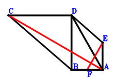
\(\because \) CD//BA and CD=2BA \(\therefore \small\overrightarrow{AC}=2 \small\overrightarrow{AB} + \small\overrightarrow{AD}\).\(\because \) DB//EA and DB=2EA \(\therefore \small\overrightarrow{AE}=- \dfrac{\small\overrightarrow{AB}}{2} + \dfrac{\small\overrightarrow{AD}}{2}\).\(\because \) F is the midpoint of BA \(\therefore \small\overrightarrow{AF}=\dfrac{\small\overrightarrow{AB}}{2}\).\(\because \) DA=2BA \( \therefore4 \small\overrightarrow{AB}^{2} - \small\overrightarrow{AD}^{2}=0.\)In conclusion, \(\small\overrightarrow{CA} \cdot \small\overrightarrow{EF}=- \small\overrightarrow{AC} \cdot \left(- \small\overrightarrow{AE} + \small\overrightarrow{AF}\right)=- \left(\small\overrightarrow{AB} - \dfrac{\small\overrightarrow{AD}}{2}\right) \cdot \left(2 \small\overrightarrow{AB} + \small\overrightarrow{AD}\right)=- 2 \small\overrightarrow{AB}^{2} + \dfrac{\small\overrightarrow{AD}^{2}}{2}=0\), that is, CA⊥FE.
Exercise 92： Let DBAC be a trapezoid with DC//BA and DC=2BA. D, A, E are collinear and DE=3AE. DA=2BA. Prove that AC⊥BE.
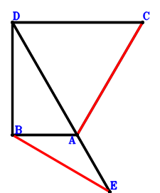
\(\because \) DC//BA and DC=2BA \(\therefore \small\overrightarrow{AC}=- 2 \small\overrightarrow{AB} + \small\overrightarrow{AD}\).\(\because \) D, A, E are collinear and DE=3AE \(\therefore \small\overrightarrow{AE}=- \dfrac{\small\overrightarrow{AD}}{2}\).\(\because \) DA=2BA \( \therefore4 \small\overrightarrow{AB}^{2} - \small\overrightarrow{AD}^{2}=0.\)In conclusion, \(\small\overrightarrow{BE} \cdot \small\overrightarrow{CA}=- \small\overrightarrow{AC} \cdot \left(- \small\overrightarrow{AB} + \small\overrightarrow{AE}\right)=- \left(- 2 \small\overrightarrow{AB} + \small\overrightarrow{AD}\right) \cdot \left(- \small\overrightarrow{AB} - \dfrac{\small\overrightarrow{AD}}{2}\right)=- 2 \small\overrightarrow{AB}^{2} + \dfrac{\small\overrightarrow{AD}^{2}}{2}=0\), that is, AC⊥BE.
Exercise 107： Let EBAC be a trapezoid with EB//CA and EB=2CA. DFAG is a trapezoid with DG//FA and DG=2FA. F, C are the midpoints of BA, DB, respectively. DA=2BA. Prove that EA⊥BG.
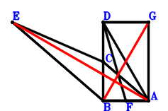
\(\because \) C is the midpoint of DB \(\therefore \small\overrightarrow{AC}=\dfrac{\small\overrightarrow{AB}}{2} + \dfrac{\small\overrightarrow{AD}}{2}\).\(\because \) EB//CA and EB=2CA \(\therefore \small\overrightarrow{AE}=\small\overrightarrow{AB} + 2 \small\overrightarrow{AC}=2 \small\overrightarrow{AB} + \small\overrightarrow{AD}\).\(\because \) F is the midpoint of BA \(\therefore \small\overrightarrow{AF}=\dfrac{\small\overrightarrow{AB}}{2}\).\(\because \) DG//FA and DG=2FA \(\therefore \small\overrightarrow{AG}=\small\overrightarrow{AD} - 2 \small\overrightarrow{AF}=- \small\overrightarrow{AB} + \small\overrightarrow{AD}\).\(\because \) DA=2BA \( \therefore4 \small\overrightarrow{AB}^{2} - \small\overrightarrow{AD}^{2}=0.\)In conclusion, \(\small\overrightarrow{EA} \cdot \small\overrightarrow{GB}=- \small\overrightarrow{AE} \cdot \left(\small\overrightarrow{AB} - \small\overrightarrow{AG}\right)=- \left(2 \small\overrightarrow{AB} - \small\overrightarrow{AD}\right) \cdot \left(2 \small\overrightarrow{AB} + \small\overrightarrow{AD}\right)=- 4 \small\overrightarrow{AB}^{2} + \small\overrightarrow{AD}^{2}=0\), that is, EA⊥BG.
Exercise 117： Let DBFA be a trapezoid with DA//BF and DA=2BF. B, A, E are collinear and BE=3AE. C is the midpoint of DB. DA=2BA. Prove that CE⊥FA.
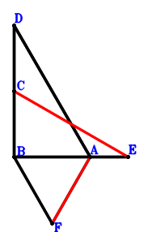
\(\because \) C is the midpoint of DB \(\therefore \small\overrightarrow{AC}=\dfrac{\small\overrightarrow{AB}}{2} + \dfrac{\small\overrightarrow{AD}}{2}\).\(\because \) B, A, E are collinear and BE=3AE \(\therefore \small\overrightarrow{AE}=- \dfrac{\small\overrightarrow{AB}}{2}\).\(\because \) DA//BF and DA=2BF \(\therefore \small\overrightarrow{AF}=\small\overrightarrow{AB} - \dfrac{\small\overrightarrow{AD}}{2}\).\(\because \) DA=2BA \( \therefore4 \small\overrightarrow{AB}^{2} - \small\overrightarrow{AD}^{2}=0.\)In conclusion, \(\small\overrightarrow{AF} \cdot \small\overrightarrow{CE}=\small\overrightarrow{AF} \cdot \left(- \small\overrightarrow{AC} + \small\overrightarrow{AE}\right)=\left(- \small\overrightarrow{AB} - \dfrac{\small\overrightarrow{AD}}{2}\right) \cdot \left(\small\overrightarrow{AB} - \dfrac{\small\overrightarrow{AD}}{2}\right)=- \small\overrightarrow{AB}^{2} + \dfrac{\small\overrightarrow{AD}^{2}}{4}=0\), that is, CE⊥FA.
Exercise 142： Let FBAD be a parallelogram. DBAC is a trapezoid with BD//AC and BD=2AC. G, E are the midpoints of FB, BA, respectively. DA=2BA. Prove that EC⊥GA.
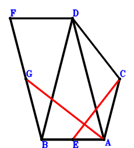
\(\because \) BD//AC and BD=2AC \(\therefore \small\overrightarrow{AC}=- \dfrac{\small\overrightarrow{AB}}{2} + \dfrac{\small\overrightarrow{AD}}{2}\).\(\because \) E is the midpoint of BA \(\therefore \small\overrightarrow{AE}=\dfrac{\small\overrightarrow{AB}}{2}\).\(\because \) FBAD is a parallelogram \(\therefore \small\overrightarrow{AF}=\small\overrightarrow{AB} + \small\overrightarrow{AD}\).\(\because \) G is the midpoint of FB \(\therefore \small\overrightarrow{AG}=\dfrac{\small\overrightarrow{AB}}{2} + \dfrac{\small\overrightarrow{AF}}{2}=\small\overrightarrow{AB} + \dfrac{\small\overrightarrow{AD}}{2}\).\(\because \) DA=2BA \( \therefore4 \small\overrightarrow{AB}^{2} - \small\overrightarrow{AD}^{2}=0.\)In conclusion, \(\small\overrightarrow{CE} \cdot \small\overrightarrow{GA}=- \small\overrightarrow{AG} \cdot \left(- \small\overrightarrow{AC} + \small\overrightarrow{AE}\right)=- \left(\small\overrightarrow{AB} - \dfrac{\small\overrightarrow{AD}}{2}\right) \cdot \left(\small\overrightarrow{AB} + \dfrac{\small\overrightarrow{AD}}{2}\right)=- \small\overrightarrow{AB}^{2} + \dfrac{\small\overrightarrow{AD}^{2}}{4}=0\), that is, EC⊥GA.
Exercise 161： Let DBAG be a trapezoid with DB//GA and DB=2GA. H, A are the midpoints of BA, BF, respectively. C is the midpoint of EA and DB. DA=2BA. Prove that EF⊥HG.
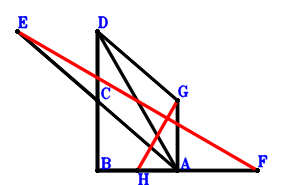
\(\because \) C is the midpoint of DB \(\therefore \small\overrightarrow{AC}=\dfrac{\small\overrightarrow{AB}}{2} + \dfrac{\small\overrightarrow{AD}}{2}\).\(\because \) C is the midpoint of EA \(\therefore \small\overrightarrow{AE}=2 \small\overrightarrow{AC}=\small\overrightarrow{AB} + \small\overrightarrow{AD}\).\(\because \) A is the midpoint of BF \(\therefore \small\overrightarrow{AF}=- \small\overrightarrow{AB}\).\(\because \) DB//GA and DB=2GA \(\therefore \small\overrightarrow{AG}=- \dfrac{\small\overrightarrow{AB}}{2} + \dfrac{\small\overrightarrow{AD}}{2}\).\(\because \) H is the midpoint of BA \(\therefore \small\overrightarrow{AH}=\dfrac{\small\overrightarrow{AB}}{2}\).\(\because \) DA=2BA \( \therefore4 \small\overrightarrow{AB}^{2} - \small\overrightarrow{AD}^{2}=0.\)In conclusion, \(\small\overrightarrow{EF} \cdot \small\overrightarrow{GH}=\left(- \small\overrightarrow{AE} + \small\overrightarrow{AF}\right) \cdot \left(- \small\overrightarrow{AG} + \small\overrightarrow{AH}\right)=\left(- 2 \small\overrightarrow{AB} - \small\overrightarrow{AD}\right) \cdot \left(\small\overrightarrow{AB} - \dfrac{\small\overrightarrow{AD}}{2}\right)=- 2 \small\overrightarrow{AB}^{2} + \dfrac{\small\overrightarrow{AD}^{2}}{2}=0\), that is, EF⊥HG.
Exercise 195： Let EBAC be a trapezoid with EB//CA and EB=2CA. FBAG is a trapezoid with BA//FG and BA=2FG. F, G, C are the midpoints of DA, HA, DB, respectively. DA=2BA. Prove that EA⊥BH.
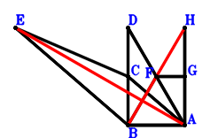
\(\because \) C is the midpoint of DB \(\therefore \small\overrightarrow{AC}=\dfrac{\small\overrightarrow{AB}}{2} + \dfrac{\small\overrightarrow{AD}}{2}\).\(\because \) EB//CA and EB=2CA \(\therefore \small\overrightarrow{AE}=\small\overrightarrow{AB} + 2 \small\overrightarrow{AC}=2 \small\overrightarrow{AB} + \small\overrightarrow{AD}\).\(\because \) F is the midpoint of DA \(\therefore \small\overrightarrow{AF}=\dfrac{\small\overrightarrow{AD}}{2}\).\(\because \) BA//FG and BA=2FG \(\therefore \small\overrightarrow{AG}=- \dfrac{\small\overrightarrow{AB}}{2} + \dfrac{\small\overrightarrow{AD}}{2}\).\(\because \) G is the midpoint of HA \(\therefore \small\overrightarrow{AH}=2 \small\overrightarrow{AG}=- \small\overrightarrow{AB} + \small\overrightarrow{AD}\).\(\because \) DA=2BA \( \therefore4 \small\overrightarrow{AB}^{2} - \small\overrightarrow{AD}^{2}=0.\)In conclusion, \(\small\overrightarrow{EA} \cdot \small\overrightarrow{HB}=- \small\overrightarrow{AE} \cdot \left(\small\overrightarrow{AB} - \small\overrightarrow{AH}\right)=- \left(2 \small\overrightarrow{AB} - \small\overrightarrow{AD}\right) \cdot \left(2 \small\overrightarrow{AB} + \small\overrightarrow{AD}\right)=- 4 \small\overrightarrow{AB}^{2} + \small\overrightarrow{AD}^{2}=0\), that is, EA⊥BH.
Exercise 204： Let FCEA be a trapezoid with FA//CE and FA=2CE. D, G, B are collinear and DG=2GB. E, C are the midpoints of BA, DA, respectively. DA=2BA. Prove that BF⊥GA.
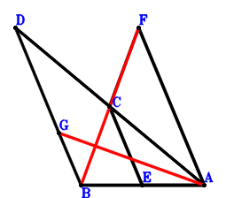
\(\because \) C is the midpoint of DA \(\therefore \small\overrightarrow{AC}=\dfrac{\small\overrightarrow{AD}}{2}\).\(\because \) E is the midpoint of BA \(\therefore \small\overrightarrow{AE}=\dfrac{\small\overrightarrow{AB}}{2}\).\(\because \) FA//CE and FA=2CE \(\therefore \small\overrightarrow{AF}=- \small\overrightarrow{AB} + 2 \small\overrightarrow{AC}=- \small\overrightarrow{AB} + \small\overrightarrow{AD}\).\(\because \) D, G, B are collinear and DG=2GB \(\therefore \small\overrightarrow{AG}=\dfrac{2 \small\overrightarrow{AB}}{3} + \dfrac{\small\overrightarrow{AD}}{3}\).\(\because \) DA=2BA \( \therefore4 \small\overrightarrow{AB}^{2} - \small\overrightarrow{AD}^{2}=0.\)In conclusion, \(\small\overrightarrow{FB} \cdot \small\overrightarrow{GA}=- \small\overrightarrow{AG} \cdot \left(\small\overrightarrow{AB} - \small\overrightarrow{AF}\right)=- \left(\dfrac{2 \small\overrightarrow{AB}}{3} + \dfrac{\small\overrightarrow{AD}}{3}\right) \cdot \left(2 \small\overrightarrow{AB} - \small\overrightarrow{AD}\right)=- \dfrac{4 \small\overrightarrow{AB}^{2}}{3} + \dfrac{\small\overrightarrow{AD}^{2}}{3}=0\), that is, BF⊥GA.
Exercise 215： Let DBFG and CBAD be parallelograms. A is the midpoint of CE and BF. DA=2BA. Prove that BE⊥AG.
\(\because \) CBAD is a parallelogram \(\therefore \small\overrightarrow{AC}=\small\overrightarrow{AB} + \small\overrightarrow{AD}\).\(\because \) A is the midpoint of CE \(\therefore \small\overrightarrow{AE}=- \small\overrightarrow{AC}=- \small\overrightarrow{AB} - \small\overrightarrow{AD}\).\(\because \) A is the midpoint of BF \(\therefore \small\overrightarrow{AF}=- \small\overrightarrow{AB}\).\(\because \) DBFG is a parallelogram \(\therefore \small\overrightarrow{AG}=- 2 \small\overrightarrow{AB} + \small\overrightarrow{AD}\).\(\because \) DA=2BA \( \therefore4 \small\overrightarrow{AB}^{2} - \small\overrightarrow{AD}^{2}=0.\)In conclusion, \(\small\overrightarrow{BE} \cdot \small\overrightarrow{GA}=- \small\overrightarrow{AG} \cdot \left(- \small\overrightarrow{AB} + \small\overrightarrow{AE}\right)=- \left(- 2 \small\overrightarrow{AB} - \small\overrightarrow{AD}\right) \cdot \left(- 2 \small\overrightarrow{AB} + \small\overrightarrow{AD}\right)=- 4 \small\overrightarrow{AB}^{2} + \small\overrightarrow{AD}^{2}=0\), that is, BE⊥AG.
Exercise 338： Let CBAD be a parallelogram. B, G, A are collinear and GA=2BG. D, F, A are collinear and DF=2FA. E is the midpoint of CB. DA=2BA. Prove that EA⊥GF.
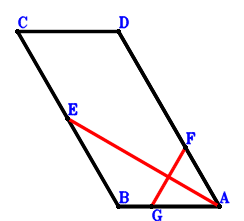
\(\because \) CBAD is a parallelogram \(\therefore \small\overrightarrow{AC}=\small\overrightarrow{AB} + \small\overrightarrow{AD}\).\(\because \) E is the midpoint of CB \(\therefore \small\overrightarrow{AE}=\dfrac{\small\overrightarrow{AB}}{2} + \dfrac{\small\overrightarrow{AC}}{2}=\small\overrightarrow{AB} + \dfrac{\small\overrightarrow{AD}}{2}\).\(\because \) D, F, A are collinear and DF=2FA \(\therefore \small\overrightarrow{AF}=\dfrac{\small\overrightarrow{AD}}{3}\).\(\because \) B, G, A are collinear and GA=2BG \(\therefore \small\overrightarrow{AG}=\dfrac{2 \small\overrightarrow{AB}}{3}\).\(\because \) DA=2BA \( \therefore4 \small\overrightarrow{AB}^{2} - \small\overrightarrow{AD}^{2}=0.\)In conclusion, \(\small\overrightarrow{EA} \cdot \small\overrightarrow{FG}=- \small\overrightarrow{AE} \cdot \left(- \small\overrightarrow{AF} + \small\overrightarrow{AG}\right)=- \left(\dfrac{2 \small\overrightarrow{AB}}{3} - \dfrac{\small\overrightarrow{AD}}{3}\right) \cdot \left(\small\overrightarrow{AB} + \dfrac{\small\overrightarrow{AD}}{2}\right)=- \dfrac{2 \small\overrightarrow{AB}^{2}}{3} + \dfrac{\small\overrightarrow{AD}^{2}}{6}=0\), that is, EA⊥GF.
Exercise 419： Let HBAD be a parallelogram. A is the midpoint of HI. C is the midpoint of BE and DA. F is the midpoint of GE and BA. DA=2BA. Prove that GA⊥BI.
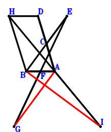
\(\because \) C is the midpoint of DA \(\therefore \small\overrightarrow{AC}=\dfrac{\small\overrightarrow{AD}}{2}\).\(\because \) C is the midpoint of BE \(\therefore \small\overrightarrow{AE}=- \small\overrightarrow{AB} + 2 \small\overrightarrow{AC}=- \small\overrightarrow{AB} + \small\overrightarrow{AD}\).\(\because \) F is the midpoint of BA \(\therefore \small\overrightarrow{AF}=\dfrac{\small\overrightarrow{AB}}{2}\).\(\because \) F is the midpoint of GE \(\therefore \small\overrightarrow{AG}=\small\overrightarrow{AB} - \small\overrightarrow{AE}=2 \small\overrightarrow{AB} - \small\overrightarrow{AD}\).\(\because \) HBAD is a parallelogram \(\therefore \small\overrightarrow{AH}=\small\overrightarrow{AB} + \small\overrightarrow{AD}\).\(\because \) A is the midpoint of HI \(\therefore \small\overrightarrow{AI}=- \small\overrightarrow{AH}=- \small\overrightarrow{AB} - \small\overrightarrow{AD}\).\(\because \) DA=2BA \( \therefore4 \small\overrightarrow{AB}^{2} - \small\overrightarrow{AD}^{2}=0.\)In conclusion, \(\small\overrightarrow{AG} \cdot \small\overrightarrow{BI}=\small\overrightarrow{AG} \cdot \left(- \small\overrightarrow{AB} + \small\overrightarrow{AI}\right)=\left(- 2 \small\overrightarrow{AB} - \small\overrightarrow{AD}\right) \cdot \left(2 \small\overrightarrow{AB} - \small\overrightarrow{AD}\right)=- 4 \small\overrightarrow{AB}^{2} + \small\overrightarrow{AD}^{2}=0\), that is, GA⊥BI.
Exercise 528： Let BCEA be a parallelogram. A, H are the midpoints of DC, BG, respectively. F is the midpoint of DG and BA. DA=2BA. Prove that BE⊥HA.
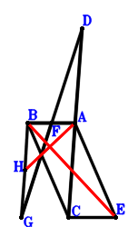
\(\because \) A is the midpoint of DC \(\therefore \small\overrightarrow{AC}=- \small\overrightarrow{AD}\).\(\because \) BCEA is a parallelogram \(\therefore \small\overrightarrow{AE}=- \small\overrightarrow{AB} - \small\overrightarrow{AD}\).\(\because \) F is the midpoint of BA \(\therefore \small\overrightarrow{AF}=\dfrac{\small\overrightarrow{AB}}{2}\).\(\because \) F is the midpoint of DG \(\therefore \small\overrightarrow{AG}=- \small\overrightarrow{AD} + 2 \small\overrightarrow{AF}=\small\overrightarrow{AB} - \small\overrightarrow{AD}\).\(\because \) H is the midpoint of BG \(\therefore \small\overrightarrow{AH}=\dfrac{\small\overrightarrow{AB}}{2} + \dfrac{\small\overrightarrow{AG}}{2}=\small\overrightarrow{AB} - \dfrac{\small\overrightarrow{AD}}{2}\).\(\because \) DA=2BA \( \therefore4 \small\overrightarrow{AB}^{2} - \small\overrightarrow{AD}^{2}=0.\)In conclusion, \(\small\overrightarrow{AH} \cdot \small\overrightarrow{BE}=\small\overrightarrow{AH} \cdot \left(- \small\overrightarrow{AB} + \small\overrightarrow{AE}\right)=\left(- 2 \small\overrightarrow{AB} - \small\overrightarrow{AD}\right) \cdot \left(\small\overrightarrow{AB} - \dfrac{\small\overrightarrow{AD}}{2}\right)=- 2 \small\overrightarrow{AB}^{2} + \dfrac{\small\overrightarrow{AD}^{2}}{2}=0\), that is, BE⊥HA.
Exercise 573： Let CBAE be a trapezoid with BA//CE and BA=2CE. B, A, H are collinear and BH=3AH. G, C, E are the midpoints of DB, DA, FA, respectively. DA=2BA. Prove that BF⊥GH.
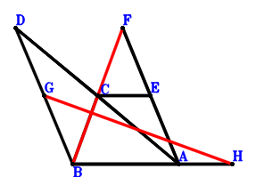
\(\because \) C is the midpoint of DA \(\therefore \small\overrightarrow{AC}=\dfrac{\small\overrightarrow{AD}}{2}\).\(\because \) BA//CE and BA=2CE \(\therefore \small\overrightarrow{AE}=- \dfrac{\small\overrightarrow{AB}}{2} + \dfrac{\small\overrightarrow{AD}}{2}\).\(\because \) E is the midpoint of FA \(\therefore \small\overrightarrow{AF}=2 \small\overrightarrow{AE}=- \small\overrightarrow{AB} + \small\overrightarrow{AD}\).\(\because \) G is the midpoint of DB \(\therefore \small\overrightarrow{AG}=\dfrac{\small\overrightarrow{AB}}{2} + \dfrac{\small\overrightarrow{AD}}{2}\).\(\because \) B, A, H are collinear and BH=3AH \(\therefore \small\overrightarrow{AH}=- \dfrac{\small\overrightarrow{AB}}{2}\).\(\because \) DA=2BA \( \therefore4 \small\overrightarrow{AB}^{2} - \small\overrightarrow{AD}^{2}=0.\)In conclusion, \(\small\overrightarrow{FB} \cdot \small\overrightarrow{GH}=\left(\small\overrightarrow{AB} - \small\overrightarrow{AF}\right) \cdot \left(- \small\overrightarrow{AG} + \small\overrightarrow{AH}\right)=\left(- \small\overrightarrow{AB} - \dfrac{\small\overrightarrow{AD}}{2}\right) \cdot \left(2 \small\overrightarrow{AB} - \small\overrightarrow{AD}\right)=- 2 \small\overrightarrow{AB}^{2} + \dfrac{\small\overrightarrow{AD}^{2}}{2}=0\), that is, BF⊥GH.
Exercise 619： Let EBCD be a parallelogram. FBAG is a trapezoid with BA//FG and BA=2FG. H, A, F are the midpoints of BA, BC, AD, respectively. AD=2BA. Prove that EA⊥HG.
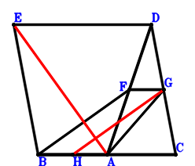
\(\because \) A is the midpoint of BC \(\therefore \small\overrightarrow{AC}=- \small\overrightarrow{AB}\).\(\because \) EBCD is a parallelogram \(\therefore \small\overrightarrow{AE}=\small\overrightarrow{AB} - \small\overrightarrow{AC} + \small\overrightarrow{AD}=2 \small\overrightarrow{AB} + \small\overrightarrow{AD}\).\(\because \) F is the midpoint of AD \(\therefore \small\overrightarrow{AF}=\dfrac{\small\overrightarrow{AD}}{2}\).\(\because \) BA//FG and BA=2FG \(\therefore \small\overrightarrow{AG}=- \dfrac{\small\overrightarrow{AB}}{2} + \dfrac{\small\overrightarrow{AD}}{2}\).\(\because \) H is the midpoint of BA \(\therefore \small\overrightarrow{AH}=\dfrac{\small\overrightarrow{AB}}{2}\).\(\because \) AD=2BA \( \therefore4 \small\overrightarrow{AB}^{2} - \small\overrightarrow{AD}^{2}=0.\)In conclusion, \(\small\overrightarrow{EA} \cdot \small\overrightarrow{GH}=- \small\overrightarrow{AE} \cdot \left(- \small\overrightarrow{AG} + \small\overrightarrow{AH}\right)=- \left(\small\overrightarrow{AB} - \dfrac{\small\overrightarrow{AD}}{2}\right) \cdot \left(2 \small\overrightarrow{AB} + \small\overrightarrow{AD}\right)=- 2 \small\overrightarrow{AB}^{2} + \dfrac{\small\overrightarrow{AD}^{2}}{2}=0\), that is, EA⊥HG.
Exercise 640： Let DBEF be a parallelogram. B, A, C are collinear and 2BC=3AC. A is the midpoint of BE. AD=2BA. Prove that DC⊥AF.
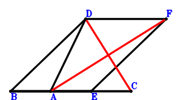
\(\because \) B, A, C are collinear and 2BC=3AC \(\therefore \small\overrightarrow{AC}=- 2 \small\overrightarrow{AB}\).\(\because \) A is the midpoint of BE \(\therefore \small\overrightarrow{AE}=- \small\overrightarrow{AB}\).\(\because \) DBEF is a parallelogram \(\therefore \small\overrightarrow{AF}=- 2 \small\overrightarrow{AB} + \small\overrightarrow{AD}\).\(\because \) AD=2BA \( \therefore4 \small\overrightarrow{AB}^{2} - \small\overrightarrow{AD}^{2}=0.\)In conclusion, \(\small\overrightarrow{DC} \cdot \small\overrightarrow{FA}=- \small\overrightarrow{AF} \cdot \left(\small\overrightarrow{AC} - \small\overrightarrow{AD}\right)=- \left(- 2 \small\overrightarrow{AB} - \small\overrightarrow{AD}\right) \cdot \left(- 2 \small\overrightarrow{AB} + \small\overrightarrow{AD}\right)=- 4 \small\overrightarrow{AB}^{2} + \small\overrightarrow{AD}^{2}=0\), that is, DC⊥AF.
Exercise 672： Let EBAC, CBAD and DBAF be parallelograms. DA=2BA. Prove that EA⊥BF.
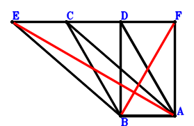
\(\because \) CBAD is a parallelogram \(\therefore \small\overrightarrow{AC}=\small\overrightarrow{AB} + \small\overrightarrow{AD}\).\(\because \) EBAC is a parallelogram \(\therefore \small\overrightarrow{AE}=2 \small\overrightarrow{AB} + \small\overrightarrow{AD}\).\(\because \) DBAF is a parallelogram \(\therefore \small\overrightarrow{AF}=- \small\overrightarrow{AB} + \small\overrightarrow{AD}\).\(\because \) DA=2BA \( \therefore4 \small\overrightarrow{AB}^{2} - \small\overrightarrow{AD}^{2}=0.\)In conclusion, \(\small\overrightarrow{EA} \cdot \small\overrightarrow{FB}=- \small\overrightarrow{AE} \cdot \left(\small\overrightarrow{AB} - \small\overrightarrow{AF}\right)=- \left(2 \small\overrightarrow{AB} - \small\overrightarrow{AD}\right) \cdot \left(2 \small\overrightarrow{AB} + \small\overrightarrow{AD}\right)=- 4 \small\overrightarrow{AB}^{2} + \small\overrightarrow{AD}^{2}=0\), that is, EA⊥BF.
Exercise 709： Let CBAD, DBFA and EBAC be parallelograms. A is the midpoint of GF. DA=2BA. Prove that EA⊥BG.
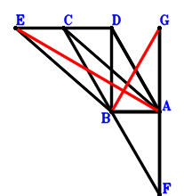
\(\because \) CBAD is a parallelogram \(\therefore \small\overrightarrow{AC}=\small\overrightarrow{AB} + \small\overrightarrow{AD}\).\(\because \) EBAC is a parallelogram \(\therefore \small\overrightarrow{AE}=2 \small\overrightarrow{AB} + \small\overrightarrow{AD}\).\(\because \) DBFA is a parallelogram \(\therefore \small\overrightarrow{AF}=\small\overrightarrow{AB} - \small\overrightarrow{AD}\).\(\because \) A is the midpoint of GF \(\therefore \small\overrightarrow{AG}=- \small\overrightarrow{AF}=- \small\overrightarrow{AB} + \small\overrightarrow{AD}\).\(\because \) DA=2BA \( \therefore4 \small\overrightarrow{AB}^{2} - \small\overrightarrow{AD}^{2}=0.\)In conclusion, \(\small\overrightarrow{EA} \cdot \small\overrightarrow{GB}=- \small\overrightarrow{AE} \cdot \left(\small\overrightarrow{AB} - \small\overrightarrow{AG}\right)=- \left(2 \small\overrightarrow{AB} - \small\overrightarrow{AD}\right) \cdot \left(2 \small\overrightarrow{AB} + \small\overrightarrow{AD}\right)=- 4 \small\overrightarrow{AB}^{2} + \small\overrightarrow{AD}^{2}=0\), that is, EA⊥BG.
Exercise 713： Let CBAD and EBAC be parallelograms. HFGA is a trapezoid with HA//FG and HA=2FG. F, G are the midpoints of DA, BA, respectively. DA=2BA. Prove that EA⊥BH.
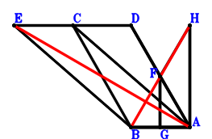
\(\because \) CBAD is a parallelogram \(\therefore \small\overrightarrow{AC}=\small\overrightarrow{AB} + \small\overrightarrow{AD}\).\(\because \) EBAC is a parallelogram \(\therefore \small\overrightarrow{AE}=2 \small\overrightarrow{AB} + \small\overrightarrow{AD}\).\(\because \) F is the midpoint of DA \(\therefore \small\overrightarrow{AF}=\dfrac{\small\overrightarrow{AD}}{2}\).\(\because \) G is the midpoint of BA \(\therefore \small\overrightarrow{AG}=\dfrac{\small\overrightarrow{AB}}{2}\).\(\because \) HA//FG and HA=2FG \(\therefore \small\overrightarrow{AH}=- \small\overrightarrow{AB} + 2 \small\overrightarrow{AF}=- \small\overrightarrow{AB} + \small\overrightarrow{AD}\).\(\because \) DA=2BA \( \therefore4 \small\overrightarrow{AB}^{2} - \small\overrightarrow{AD}^{2}=0.\)In conclusion, \(\small\overrightarrow{EA} \cdot \small\overrightarrow{HB}=- \small\overrightarrow{AE} \cdot \left(\small\overrightarrow{AB} - \small\overrightarrow{AH}\right)=- \left(2 \small\overrightarrow{AB} - \small\overrightarrow{AD}\right) \cdot \left(2 \small\overrightarrow{AB} + \small\overrightarrow{AD}\right)=- 4 \small\overrightarrow{AB}^{2} + \small\overrightarrow{AD}^{2}=0\), that is, EA⊥BH.
Exercise 716： Let GBAF, DBEA and FBAD be parallelograms. A is the midpoint of BC. AD=2BA. Prove that EC⊥GA.
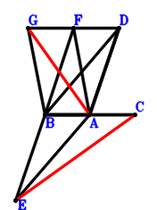
\(\because \) A is the midpoint of BC \(\therefore \small\overrightarrow{AC}=- \small\overrightarrow{AB}\).\(\because \) DBEA is a parallelogram \(\therefore \small\overrightarrow{AE}=\small\overrightarrow{AB} - \small\overrightarrow{AD}\).\(\because \) FBAD is a parallelogram \(\therefore \small\overrightarrow{AF}=\small\overrightarrow{AB} + \small\overrightarrow{AD}\).\(\because \) GBAF is a parallelogram \(\therefore \small\overrightarrow{AG}=2 \small\overrightarrow{AB} + \small\overrightarrow{AD}\).\(\because \) AD=2BA \( \therefore4 \small\overrightarrow{AB}^{2} - \small\overrightarrow{AD}^{2}=0.\)In conclusion, \(\small\overrightarrow{CE} \cdot \small\overrightarrow{GA}=- \small\overrightarrow{AG} \cdot \left(- \small\overrightarrow{AC} + \small\overrightarrow{AE}\right)=- \left(2 \small\overrightarrow{AB} - \small\overrightarrow{AD}\right) \cdot \left(2 \small\overrightarrow{AB} + \small\overrightarrow{AD}\right)=- 4 \small\overrightarrow{AB}^{2} + \small\overrightarrow{AD}^{2}=0\), that is, EC⊥GA.
Exercise 727： Let HBAG and GBAD be parallelograms. A is the midpoint of BC. E is the midpoint of BA and FD. AD=2BA. Prove that FC⊥HA.
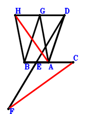
\(\because \) A is the midpoint of BC \(\therefore \small\overrightarrow{AC}=- \small\overrightarrow{AB}\).\(\because \) E is the midpoint of BA \(\therefore \small\overrightarrow{AE}=\dfrac{\small\overrightarrow{AB}}{2}\).\(\because \) E is the midpoint of FD \(\therefore \small\overrightarrow{AF}=- \small\overrightarrow{AD} + 2 \small\overrightarrow{AE}=\small\overrightarrow{AB} - \small\overrightarrow{AD}\).\(\because \) GBAD is a parallelogram \(\therefore \small\overrightarrow{AG}=\small\overrightarrow{AB} + \small\overrightarrow{AD}\).\(\because \) HBAG is a parallelogram \(\therefore \small\overrightarrow{AH}=2 \small\overrightarrow{AB} + \small\overrightarrow{AD}\).\(\because \) AD=2BA \( \therefore4 \small\overrightarrow{AB}^{2} - \small\overrightarrow{AD}^{2}=0.\)In conclusion, \(\small\overrightarrow{CF} \cdot \small\overrightarrow{HA}=- \small\overrightarrow{AH} \cdot \left(- \small\overrightarrow{AC} + \small\overrightarrow{AF}\right)=- \left(2 \small\overrightarrow{AB} - \small\overrightarrow{AD}\right) \cdot \left(2 \small\overrightarrow{AB} + \small\overrightarrow{AD}\right)=- 4 \small\overrightarrow{AB}^{2} + \small\overrightarrow{AD}^{2}=0\), that is, FC⊥HA.
Exercise 747： Let DBAG and FBAE be parallelograms. C is the midpoint of EA and DB. DA=2BA. Prove that FA⊥BG.
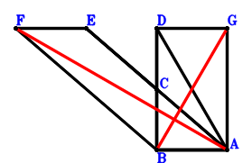
\(\because \) C is the midpoint of DB \(\therefore \small\overrightarrow{AC}=\dfrac{\small\overrightarrow{AB}}{2} + \dfrac{\small\overrightarrow{AD}}{2}\).\(\because \) C is the midpoint of EA \(\therefore \small\overrightarrow{AE}=2 \small\overrightarrow{AC}=\small\overrightarrow{AB} + \small\overrightarrow{AD}\).\(\because \) FBAE is a parallelogram \(\therefore \small\overrightarrow{AF}=2 \small\overrightarrow{AB} + \small\overrightarrow{AD}\).\(\because \) DBAG is a parallelogram \(\therefore \small\overrightarrow{AG}=- \small\overrightarrow{AB} + \small\overrightarrow{AD}\).\(\because \) DA=2BA \( \therefore4 \small\overrightarrow{AB}^{2} - \small\overrightarrow{AD}^{2}=0.\)In conclusion, \(\small\overrightarrow{FA} \cdot \small\overrightarrow{GB}=- \small\overrightarrow{AF} \cdot \left(\small\overrightarrow{AB} - \small\overrightarrow{AG}\right)=- \left(2 \small\overrightarrow{AB} - \small\overrightarrow{AD}\right) \cdot \left(2 \small\overrightarrow{AB} + \small\overrightarrow{AD}\right)=- 4 \small\overrightarrow{AB}^{2} + \small\overrightarrow{AD}^{2}=0\), that is, FA⊥BG.
Exercise 809： Let DBAF be a parallelogram. EBAC is a trapezoid with EB//CA and EB=2CA. H, G, C are the midpoints of BA, FA, DB, respectively. DA=2BA. Prove that EA⊥HG.
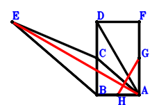
\(\because \) C is the midpoint of DB \(\therefore \small\overrightarrow{AC}=\dfrac{\small\overrightarrow{AB}}{2} + \dfrac{\small\overrightarrow{AD}}{2}\).\(\because \) EB//CA and EB=2CA \(\therefore \small\overrightarrow{AE}=\small\overrightarrow{AB} + 2 \small\overrightarrow{AC}=2 \small\overrightarrow{AB} + \small\overrightarrow{AD}\).\(\because \) DBAF is a parallelogram \(\therefore \small\overrightarrow{AF}=- \small\overrightarrow{AB} + \small\overrightarrow{AD}\).\(\because \) G is the midpoint of FA \(\therefore \small\overrightarrow{AG}=\dfrac{\small\overrightarrow{AF}}{2}=- \dfrac{\small\overrightarrow{AB}}{2} + \dfrac{\small\overrightarrow{AD}}{2}\).\(\because \) H is the midpoint of BA \(\therefore \small\overrightarrow{AH}=\dfrac{\small\overrightarrow{AB}}{2}\).\(\because \) DA=2BA \( \therefore4 \small\overrightarrow{AB}^{2} - \small\overrightarrow{AD}^{2}=0.\)In conclusion, \(\small\overrightarrow{EA} \cdot \small\overrightarrow{GH}=- \small\overrightarrow{AE} \cdot \left(- \small\overrightarrow{AG} + \small\overrightarrow{AH}\right)=- \left(\small\overrightarrow{AB} - \dfrac{\small\overrightarrow{AD}}{2}\right) \cdot \left(2 \small\overrightarrow{AB} + \small\overrightarrow{AD}\right)=- 2 \small\overrightarrow{AB}^{2} + \dfrac{\small\overrightarrow{AD}^{2}}{2}=0\), that is, EA⊥HG.
Exercise 811： Let FBAD be a parallelogram. DCAE is a trapezoid with DE//CA and DE=2CA. C, G are the midpoints of BA, BF, respectively. AD=2BA. Prove that BE⊥GA.
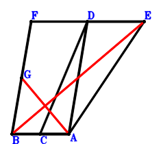
\(\because \) C is the midpoint of BA \(\therefore \small\overrightarrow{AC}=\dfrac{\small\overrightarrow{AB}}{2}\).\(\because \) DE//CA and DE=2CA \(\therefore \small\overrightarrow{AE}=- 2 \small\overrightarrow{AC} + \small\overrightarrow{AD}=- \small\overrightarrow{AB} + \small\overrightarrow{AD}\).\(\because \) FBAD is a parallelogram \(\therefore \small\overrightarrow{AF}=\small\overrightarrow{AB} + \small\overrightarrow{AD}\).\(\because \) G is the midpoint of BF \(\therefore \small\overrightarrow{AG}=\dfrac{\small\overrightarrow{AB}}{2} + \dfrac{\small\overrightarrow{AF}}{2}=\small\overrightarrow{AB} + \dfrac{\small\overrightarrow{AD}}{2}\).\(\because \) AD=2BA \( \therefore4 \small\overrightarrow{AB}^{2} - \small\overrightarrow{AD}^{2}=0.\)In conclusion, \(\small\overrightarrow{EB} \cdot \small\overrightarrow{GA}=- \small\overrightarrow{AG} \cdot \left(\small\overrightarrow{AB} - \small\overrightarrow{AE}\right)=- \left(\small\overrightarrow{AB} + \dfrac{\small\overrightarrow{AD}}{2}\right) \cdot \left(2 \small\overrightarrow{AB} - \small\overrightarrow{AD}\right)=- 2 \small\overrightarrow{AB}^{2} + \dfrac{\small\overrightarrow{AD}^{2}}{2}=0\), that is, BE⊥GA.
Exercise 823： Let DACE and FBAD be parallelograms. A, G are the midpoints of BC, BF, respectively. AD=2BA. Prove that BE⊥GA.
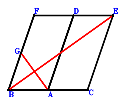
\(\because \) A is the midpoint of BC \(\therefore \small\overrightarrow{AC}=- \small\overrightarrow{AB}\).\(\because \) DACE is a parallelogram \(\therefore \small\overrightarrow{AE}=- \small\overrightarrow{AB} + \small\overrightarrow{AD}\).\(\because \) FBAD is a parallelogram \(\therefore \small\overrightarrow{AF}=\small\overrightarrow{AB} + \small\overrightarrow{AD}\).\(\because \) G is the midpoint of BF \(\therefore \small\overrightarrow{AG}=\dfrac{\small\overrightarrow{AB}}{2} + \dfrac{\small\overrightarrow{AF}}{2}=\small\overrightarrow{AB} + \dfrac{\small\overrightarrow{AD}}{2}\).\(\because \) AD=2BA \( \therefore4 \small\overrightarrow{AB}^{2} - \small\overrightarrow{AD}^{2}=0.\)In conclusion, \(\small\overrightarrow{EB} \cdot \small\overrightarrow{GA}=- \small\overrightarrow{AG} \cdot \left(\small\overrightarrow{AB} - \small\overrightarrow{AE}\right)=- \left(\small\overrightarrow{AB} + \dfrac{\small\overrightarrow{AD}}{2}\right) \cdot \left(2 \small\overrightarrow{AB} - \small\overrightarrow{AD}\right)=- 2 \small\overrightarrow{AB}^{2} + \dfrac{\small\overrightarrow{AD}^{2}}{2}=0\), that is, BE⊥GA.
Exercise 835： Let DBFG and BCEA be parallelograms. A is the midpoint of DC and BF. DA=2BA. Prove that BE⊥AG.
\(\because \) A is the midpoint of DC \(\therefore \small\overrightarrow{AC}=- \small\overrightarrow{AD}\).\(\because \) BCEA is a parallelogram \(\therefore \small\overrightarrow{AE}=- \small\overrightarrow{AB} - \small\overrightarrow{AD}\).\(\because \) A is the midpoint of BF \(\therefore \small\overrightarrow{AF}=- \small\overrightarrow{AB}\).\(\because \) DBFG is a parallelogram \(\therefore \small\overrightarrow{AG}=- 2 \small\overrightarrow{AB} + \small\overrightarrow{AD}\).\(\because \) DA=2BA \( \therefore4 \small\overrightarrow{AB}^{2} - \small\overrightarrow{AD}^{2}=0.\)In conclusion, \(\small\overrightarrow{BE} \cdot \small\overrightarrow{GA}=- \small\overrightarrow{AG} \cdot \left(- \small\overrightarrow{AB} + \small\overrightarrow{AE}\right)=- \left(- 2 \small\overrightarrow{AB} - \small\overrightarrow{AD}\right) \cdot \left(- 2 \small\overrightarrow{AB} + \small\overrightarrow{AD}\right)=- 4 \small\overrightarrow{AB}^{2} + \small\overrightarrow{AD}^{2}=0\), that is, BE⊥AG.
Exercise 839： Let EBCD be a parallelogram. HFGA is a trapezoid with AH//GF and AH=2GF. A, F, G are the midpoints of BC, AD, BA, respectively. AD=2BA. Prove that EA⊥BH.
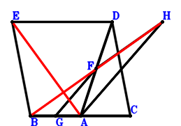
\(\because \) A is the midpoint of BC \(\therefore \small\overrightarrow{AC}=- \small\overrightarrow{AB}\).\(\because \) EBCD is a parallelogram \(\therefore \small\overrightarrow{AE}=\small\overrightarrow{AB} - \small\overrightarrow{AC} + \small\overrightarrow{AD}=2 \small\overrightarrow{AB} + \small\overrightarrow{AD}\).\(\because \) F is the midpoint of AD \(\therefore \small\overrightarrow{AF}=\dfrac{\small\overrightarrow{AD}}{2}\).\(\because \) G is the midpoint of BA \(\therefore \small\overrightarrow{AG}=\dfrac{\small\overrightarrow{AB}}{2}\).\(\because \) AH//GF and AH=2GF \(\therefore \small\overrightarrow{AH}=- \small\overrightarrow{AB} + 2 \small\overrightarrow{AF}=- \small\overrightarrow{AB} + \small\overrightarrow{AD}\).\(\because \) AD=2BA \( \therefore4 \small\overrightarrow{AB}^{2} - \small\overrightarrow{AD}^{2}=0.\)In conclusion, \(\small\overrightarrow{EA} \cdot \small\overrightarrow{HB}=- \small\overrightarrow{AE} \cdot \left(\small\overrightarrow{AB} - \small\overrightarrow{AH}\right)=- \left(2 \small\overrightarrow{AB} - \small\overrightarrow{AD}\right) \cdot \left(2 \small\overrightarrow{AB} + \small\overrightarrow{AD}\right)=- 4 \small\overrightarrow{AB}^{2} + \small\overrightarrow{AD}^{2}=0\), that is, EA⊥BH.
Exercise 867： Let CBAD and DBFA be parallelograms. A, G are the midpoints of BE, BF, respectively. DA=2BA. Prove that CE⊥GA.
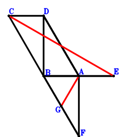
\(\because \) CBAD is a parallelogram \(\therefore \small\overrightarrow{AC}=\small\overrightarrow{AB} + \small\overrightarrow{AD}\).\(\because \) A is the midpoint of BE \(\therefore \small\overrightarrow{AE}=- \small\overrightarrow{AB}\).\(\because \) DBFA is a parallelogram \(\therefore \small\overrightarrow{AF}=\small\overrightarrow{AB} - \small\overrightarrow{AD}\).\(\because \) G is the midpoint of BF \(\therefore \small\overrightarrow{AG}=\dfrac{\small\overrightarrow{AB}}{2} + \dfrac{\small\overrightarrow{AF}}{2}=\small\overrightarrow{AB} - \dfrac{\small\overrightarrow{AD}}{2}\).\(\because \) DA=2BA \( \therefore4 \small\overrightarrow{AB}^{2} - \small\overrightarrow{AD}^{2}=0.\)In conclusion, \(\small\overrightarrow{AG} \cdot \small\overrightarrow{CE}=\small\overrightarrow{AG} \cdot \left(- \small\overrightarrow{AC} + \small\overrightarrow{AE}\right)=\left(- 2 \small\overrightarrow{AB} - \small\overrightarrow{AD}\right) \cdot \left(\small\overrightarrow{AB} - \dfrac{\small\overrightarrow{AD}}{2}\right)=- 2 \small\overrightarrow{AB}^{2} + \dfrac{\small\overrightarrow{AD}^{2}}{2}=0\), that is, CE⊥GA.
Exercise 887： Let CBAD, FBAG and DBAF be parallelograms. A is the midpoint of CE. DA=2BA. Prove that BE⊥AG.
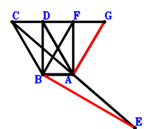
\(\because \) CBAD is a parallelogram \(\therefore \small\overrightarrow{AC}=\small\overrightarrow{AB} + \small\overrightarrow{AD}\).\(\because \) A is the midpoint of CE \(\therefore \small\overrightarrow{AE}=- \small\overrightarrow{AC}=- \small\overrightarrow{AB} - \small\overrightarrow{AD}\).\(\because \) DBAF is a parallelogram \(\therefore \small\overrightarrow{AF}=- \small\overrightarrow{AB} + \small\overrightarrow{AD}\).\(\because \) FBAG is a parallelogram \(\therefore \small\overrightarrow{AG}=- 2 \small\overrightarrow{AB} + \small\overrightarrow{AD}\).\(\because \) DA=2BA \( \therefore4 \small\overrightarrow{AB}^{2} - \small\overrightarrow{AD}^{2}=0.\)In conclusion, \(\small\overrightarrow{BE} \cdot \small\overrightarrow{GA}=- \small\overrightarrow{AG} \cdot \left(- \small\overrightarrow{AB} + \small\overrightarrow{AE}\right)=- \left(- 2 \small\overrightarrow{AB} - \small\overrightarrow{AD}\right) \cdot \left(- 2 \small\overrightarrow{AB} + \small\overrightarrow{AD}\right)=- 4 \small\overrightarrow{AB}^{2} + \small\overrightarrow{AD}^{2}=0\), that is, BE⊥AG.
Exercise 895： Let CDBA be a parallelogram. F, A, B are collinear and FB=3FA. E is the midpoint of DB. DA=2AB. Prove that CB⊥EF.
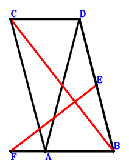
\(\because \) CDBA is a parallelogram \(\therefore \small\overrightarrow{BC}=\small\overrightarrow{BA} + \small\overrightarrow{BD}\).\(\because \) E is the midpoint of DB \(\therefore \small\overrightarrow{BE}=\dfrac{\small\overrightarrow{BD}}{2}\).\(\because \) F, A, B are collinear and FB=3FA \(\therefore \small\overrightarrow{BF}=\dfrac{3 \small\overrightarrow{BA}}{2}\).\(\because \) DA=2AB \( \therefore4 \small\overrightarrow{AB}^{2} - \small\overrightarrow{AD}^{2}=4 \small\overrightarrow{BA}^{2} - \left(- \small\overrightarrow{BA} + \small\overrightarrow{BD}\right)^{2}=3 \small\overrightarrow{BA}^{2} + 2 \small\overrightarrow{BA} \cdot \small\overrightarrow{BD} - \small\overrightarrow{BD}^{2}=0.\)In conclusion, \(\small\overrightarrow{CB} \cdot \small\overrightarrow{EF}=- \small\overrightarrow{BC} \cdot \left(- \small\overrightarrow{BE} + \small\overrightarrow{BF}\right)=- \left(\small\overrightarrow{BA} + \small\overrightarrow{BD}\right) \cdot \left(\dfrac{3 \small\overrightarrow{BA}}{2} - \dfrac{\small\overrightarrow{BD}}{2}\right)=- \dfrac{3 \small\overrightarrow{BA}^{2}}{2} - \small\overrightarrow{BA} \cdot \small\overrightarrow{BD} + \dfrac{\small\overrightarrow{BD}^{2}}{2}=0\), that is, CB⊥EF.
Exercise 951： Let FCEA be a trapezoid with FA//CE and FA=2CE. DGBA is a trapezoid with DA//GB and DA=2GB. E, C are the midpoints of BA, DA, respectively. DA=2BA. Prove that BF⊥GA.
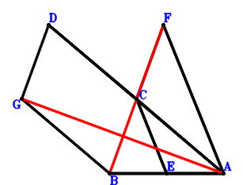
\(\because \) C is the midpoint of DA \(\therefore \small\overrightarrow{AC}=\dfrac{\small\overrightarrow{AD}}{2}\).\(\because \) E is the midpoint of BA \(\therefore \small\overrightarrow{AE}=\dfrac{\small\overrightarrow{AB}}{2}\).\(\because \) FA//CE and FA=2CE \(\therefore \small\overrightarrow{AF}=- \small\overrightarrow{AB} + 2 \small\overrightarrow{AC}=- \small\overrightarrow{AB} + \small\overrightarrow{AD}\).\(\because \) DA//GB and DA=2GB \(\therefore \small\overrightarrow{AG}=\small\overrightarrow{AB} + \dfrac{\small\overrightarrow{AD}}{2}\).\(\because \) DA=2BA \( \therefore4 \small\overrightarrow{AB}^{2} - \small\overrightarrow{AD}^{2}=0.\)In conclusion, \(\small\overrightarrow{FB} \cdot \small\overrightarrow{GA}=- \small\overrightarrow{AG} \cdot \left(\small\overrightarrow{AB} - \small\overrightarrow{AF}\right)=- \left(\small\overrightarrow{AB} + \dfrac{\small\overrightarrow{AD}}{2}\right) \cdot \left(2 \small\overrightarrow{AB} - \small\overrightarrow{AD}\right)=- 2 \small\overrightarrow{AB}^{2} + \dfrac{\small\overrightarrow{AD}^{2}}{2}=0\), that is, BF⊥GA.
Exercise 952： Let DCAE be a trapezoid with DE//CA and DE=2CA. DFBA is a trapezoid with AD//BF and AD=2BF. C is the midpoint of BA. AD=2BA. Prove that BE⊥FA.
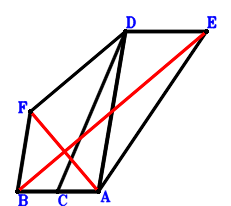
\(\because \) C is the midpoint of BA \(\therefore \small\overrightarrow{AC}=\dfrac{\small\overrightarrow{AB}}{2}\).\(\because \) DE//CA and DE=2CA \(\therefore \small\overrightarrow{AE}=- 2 \small\overrightarrow{AC} + \small\overrightarrow{AD}=- \small\overrightarrow{AB} + \small\overrightarrow{AD}\).\(\because \) AD//BF and AD=2BF \(\therefore \small\overrightarrow{AF}=\small\overrightarrow{AB} + \dfrac{\small\overrightarrow{AD}}{2}\).\(\because \) AD=2BA \( \therefore4 \small\overrightarrow{AB}^{2} - \small\overrightarrow{AD}^{2}=0.\)In conclusion, \(\small\overrightarrow{EB} \cdot \small\overrightarrow{FA}=- \small\overrightarrow{AF} \cdot \left(\small\overrightarrow{AB} - \small\overrightarrow{AE}\right)=- \left(\small\overrightarrow{AB} + \dfrac{\small\overrightarrow{AD}}{2}\right) \cdot \left(2 \small\overrightarrow{AB} - \small\overrightarrow{AD}\right)=- 2 \small\overrightarrow{AB}^{2} + \dfrac{\small\overrightarrow{AD}^{2}}{2}=0\), that is, BE⊥FA.
Exercise 977： Let FBAE be a trapezoid with BA//FE and BA=2FE. E, B are the midpoints of BD, CA, respectively. AD=2BA. Prove that FA⊥CD.
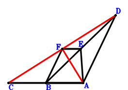
\(\because \) B is the midpoint of CA \(\therefore \small\overrightarrow{AC}=2 \small\overrightarrow{AB}\).\(\because \) E is the midpoint of BD \(\therefore \small\overrightarrow{AE}=\dfrac{\small\overrightarrow{AB}}{2} + \dfrac{\small\overrightarrow{AD}}{2}\).\(\because \) BA//FE and BA=2FE \(\therefore \small\overrightarrow{AF}=\small\overrightarrow{AB} + \dfrac{\small\overrightarrow{AD}}{2}\).\(\because \) AD=2BA \( \therefore4 \small\overrightarrow{AB}^{2} - \small\overrightarrow{AD}^{2}=0.\)In conclusion, \(\small\overrightarrow{DC} \cdot \small\overrightarrow{FA}=- \small\overrightarrow{AF} \cdot \left(\small\overrightarrow{AC} - \small\overrightarrow{AD}\right)=- \left(\small\overrightarrow{AB} + \dfrac{\small\overrightarrow{AD}}{2}\right) \cdot \left(2 \small\overrightarrow{AB} - \small\overrightarrow{AD}\right)=- 2 \small\overrightarrow{AB}^{2} + \dfrac{\small\overrightarrow{AD}^{2}}{2}=0\), that is, FA⊥CD.
Exercise 980： Let EBAD be a parallelogram. F, B are the midpoints of BE, CA, respectively. AD=2BA. Prove that FA⊥CD.
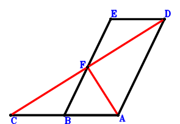
\(\because \) B is the midpoint of CA \(\therefore \small\overrightarrow{AC}=2 \small\overrightarrow{AB}\).\(\because \) EBAD is a parallelogram \(\therefore \small\overrightarrow{AE}=\small\overrightarrow{AB} + \small\overrightarrow{AD}\).\(\because \) F is the midpoint of BE \(\therefore \small\overrightarrow{AF}=\dfrac{\small\overrightarrow{AB}}{2} + \dfrac{\small\overrightarrow{AE}}{2}=\small\overrightarrow{AB} + \dfrac{\small\overrightarrow{AD}}{2}\).\(\because \) AD=2BA \( \therefore4 \small\overrightarrow{AB}^{2} - \small\overrightarrow{AD}^{2}=0.\)In conclusion, \(\small\overrightarrow{DC} \cdot \small\overrightarrow{FA}=- \small\overrightarrow{AF} \cdot \left(\small\overrightarrow{AC} - \small\overrightarrow{AD}\right)=- \left(\small\overrightarrow{AB} + \dfrac{\small\overrightarrow{AD}}{2}\right) \cdot \left(2 \small\overrightarrow{AB} - \small\overrightarrow{AD}\right)=- 2 \small\overrightarrow{AB}^{2} + \dfrac{\small\overrightarrow{AD}^{2}}{2}=0\), that is, FA⊥CD.
Exercise 1018： Let DBAE be a parallelogram. B, A, C are collinear and 2BC=3AC. AD=2BA. Prove that DC⊥BE.
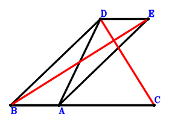
\(\because \) B, A, C are collinear and 2BC=3AC \(\therefore \small\overrightarrow{AC}=- 2 \small\overrightarrow{AB}\).\(\because \) DBAE is a parallelogram \(\therefore \small\overrightarrow{AE}=- \small\overrightarrow{AB} + \small\overrightarrow{AD}\).\(\because \) AD=2BA \( \therefore4 \small\overrightarrow{AB}^{2} - \small\overrightarrow{AD}^{2}=0.\)In conclusion, \(\small\overrightarrow{DC} \cdot \small\overrightarrow{EB}=\left(\small\overrightarrow{AB} - \small\overrightarrow{AE}\right) \cdot \left(\small\overrightarrow{AC} - \small\overrightarrow{AD}\right)=\left(- 2 \small\overrightarrow{AB} - \small\overrightarrow{AD}\right) \cdot \left(2 \small\overrightarrow{AB} - \small\overrightarrow{AD}\right)=- 4 \small\overrightarrow{AB}^{2} + \small\overrightarrow{AD}^{2}=0\), that is, DC⊥BE.
Exercise 1025： Let D, A, E be collinear and DE=3AE. B is the midpoint of CD. DA=2BA. Prove that CA⊥BE.
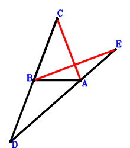
\(\because \) B is the midpoint of CD \(\therefore \small\overrightarrow{AC}=2 \small\overrightarrow{AB} - \small\overrightarrow{AD}\).\(\because \) D, A, E are collinear and DE=3AE \(\therefore \small\overrightarrow{AE}=- \dfrac{\small\overrightarrow{AD}}{2}\).\(\because \) DA=2BA \( \therefore4 \small\overrightarrow{AB}^{2} - \small\overrightarrow{AD}^{2}=0.\)In conclusion, \(\small\overrightarrow{AC} \cdot \small\overrightarrow{BE}=\small\overrightarrow{AC} \cdot \left(- \small\overrightarrow{AB} + \small\overrightarrow{AE}\right)=\left(- \small\overrightarrow{AB} - \dfrac{\small\overrightarrow{AD}}{2}\right) \cdot \left(2 \small\overrightarrow{AB} - \small\overrightarrow{AD}\right)=- 2 \small\overrightarrow{AB}^{2} + \dfrac{\small\overrightarrow{AD}^{2}}{2}=0\), that is, CA⊥BE.
Exercise 1028： Let DBAC be a parallelogram. B, E, D are collinear and ED=2BE. DA=2BA. Prove that BC⊥EA.
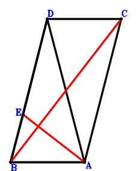
\(\because \) DBAC is a parallelogram \(\therefore \small\overrightarrow{AC}=- \small\overrightarrow{AB} + \small\overrightarrow{AD}\).\(\because \) B, E, D are collinear and ED=2BE \(\therefore \small\overrightarrow{AE}=\dfrac{2 \small\overrightarrow{AB}}{3} + \dfrac{\small\overrightarrow{AD}}{3}\).\(\because \) DA=2BA \( \therefore4 \small\overrightarrow{AB}^{2} - \small\overrightarrow{AD}^{2}=0.\)In conclusion, \(\small\overrightarrow{CB} \cdot \small\overrightarrow{EA}=- \small\overrightarrow{AE} \cdot \left(\small\overrightarrow{AB} - \small\overrightarrow{AC}\right)=- \left(\dfrac{2 \small\overrightarrow{AB}}{3} + \dfrac{\small\overrightarrow{AD}}{3}\right) \cdot \left(2 \small\overrightarrow{AB} - \small\overrightarrow{AD}\right)=- \dfrac{4 \small\overrightarrow{AB}^{2}}{3} + \dfrac{\small\overrightarrow{AD}^{2}}{3}=0\), that is, BC⊥EA.
Exercise 1030： Let CBAD be a trapezoid with CD//BA and CD=2BA. DBAE is a trapezoid with DE//BA and DE=2BA. DA=2BA. Prove that CA⊥AE.
Exercise 1035： Let DBAE be a parallelogram. CBAD is a trapezoid with CD//BA and CD=2BA. F is the midpoint of BG and EA. DA=2BA. Prove that CA⊥AG.
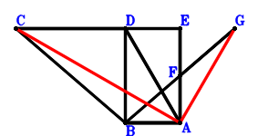
\(\because \) CD//BA and CD=2BA \(\therefore \small\overrightarrow{AC}=2 \small\overrightarrow{AB} + \small\overrightarrow{AD}\).\(\because \) DBAE is a parallelogram \(\therefore \small\overrightarrow{AE}=- \small\overrightarrow{AB} + \small\overrightarrow{AD}\).\(\because \) F is the midpoint of EA \(\therefore \small\overrightarrow{AF}=\dfrac{\small\overrightarrow{AE}}{2}=- \dfrac{\small\overrightarrow{AB}}{2} + \dfrac{\small\overrightarrow{AD}}{2}\).\(\because \) F is the midpoint of BG \(\therefore \small\overrightarrow{AG}=- \small\overrightarrow{AB} + 2 \small\overrightarrow{AF}=- 2 \small\overrightarrow{AB} + \small\overrightarrow{AD}\).\(\because \) DA=2BA \( \therefore4 \small\overrightarrow{AB}^{2} - \small\overrightarrow{AD}^{2}=0.\)In conclusion, \(\small\overrightarrow{AC} \cdot \small\overrightarrow{AG}=\left(- 2 \small\overrightarrow{AB} + \small\overrightarrow{AD}\right) \cdot \left(2 \small\overrightarrow{AB} + \small\overrightarrow{AD}\right)=- 4 \small\overrightarrow{AB}^{2} + \small\overrightarrow{AD}^{2}=0\), that is, CA⊥AG.
Exercise 1052： Let CBAD be a trapezoid with CD//BA and CD=2BA. B is the midpoint of FA. E is the midpoint of DA and FG. DA=2BA. Prove that CA⊥AG.
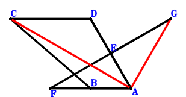
\(\because \) CD//BA and CD=2BA \(\therefore \small\overrightarrow{AC}=2 \small\overrightarrow{AB} + \small\overrightarrow{AD}\).\(\because \) E is the midpoint of DA \(\therefore \small\overrightarrow{AE}=\dfrac{\small\overrightarrow{AD}}{2}\).\(\because \) B is the midpoint of FA \(\therefore \small\overrightarrow{AF}=2 \small\overrightarrow{AB}\).\(\because \) E is the midpoint of FG \(\therefore \small\overrightarrow{AG}=\small\overrightarrow{AD} - \small\overrightarrow{AF}=- 2 \small\overrightarrow{AB} + \small\overrightarrow{AD}\).\(\because \) DA=2BA \( \therefore4 \small\overrightarrow{AB}^{2} - \small\overrightarrow{AD}^{2}=0.\)In conclusion, \(\small\overrightarrow{AC} \cdot \small\overrightarrow{AG}=\left(- 2 \small\overrightarrow{AB} + \small\overrightarrow{AD}\right) \cdot \left(2 \small\overrightarrow{AB} + \small\overrightarrow{AD}\right)=- 4 \small\overrightarrow{AB}^{2} + \small\overrightarrow{AD}^{2}=0\), that is, CA⊥AG.
Exercise 1076： Let FBAG be a parallelogram. CBAD is a trapezoid with CD//BA and CD=2BA. E is the midpoint of DA and BF. DA=2BA. Prove that CA⊥AG.
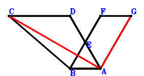
\(\because \) CD//BA and CD=2BA \(\therefore \small\overrightarrow{AC}=2 \small\overrightarrow{AB} + \small\overrightarrow{AD}\).\(\because \) E is the midpoint of DA \(\therefore \small\overrightarrow{AE}=\dfrac{\small\overrightarrow{AD}}{2}\).\(\because \) E is the midpoint of BF \(\therefore \small\overrightarrow{AF}=- \small\overrightarrow{AB} + 2 \small\overrightarrow{AE}=- \small\overrightarrow{AB} + \small\overrightarrow{AD}\).\(\because \) FBAG is a parallelogram \(\therefore \small\overrightarrow{AG}=- 2 \small\overrightarrow{AB} + \small\overrightarrow{AD}\).\(\because \) DA=2BA \( \therefore4 \small\overrightarrow{AB}^{2} - \small\overrightarrow{AD}^{2}=0.\)In conclusion, \(\small\overrightarrow{AC} \cdot \small\overrightarrow{AG}=\left(- 2 \small\overrightarrow{AB} + \small\overrightarrow{AD}\right) \cdot \left(2 \small\overrightarrow{AB} + \small\overrightarrow{AD}\right)=- 4 \small\overrightarrow{AB}^{2} + \small\overrightarrow{AD}^{2}=0\), that is, CA⊥AG.
Exercise 1093： Let DEBA be a trapezoid with DA//EB and DA=2EB. B is the midpoint of DC. DA=2BA. Prove that EA⊥AC.
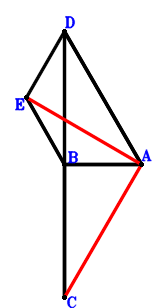
\(\because \) B is the midpoint of DC \(\therefore \small\overrightarrow{AC}=2 \small\overrightarrow{AB} - \small\overrightarrow{AD}\).\(\because \) DA//EB and DA=2EB \(\therefore \small\overrightarrow{AE}=\small\overrightarrow{AB} + \dfrac{\small\overrightarrow{AD}}{2}\).\(\because \) DA=2BA \( \therefore4 \small\overrightarrow{AB}^{2} - \small\overrightarrow{AD}^{2}=0.\)In conclusion, \(- \small\overrightarrow{AC} \cdot \small\overrightarrow{AE}=- \left(\small\overrightarrow{AB} + \dfrac{\small\overrightarrow{AD}}{2}\right) \cdot \left(2 \small\overrightarrow{AB} - \small\overrightarrow{AD}\right)=- 2 \small\overrightarrow{AB}^{2} + \dfrac{\small\overrightarrow{AD}^{2}}{2}=0\), that is, EA⊥AC.
Exercise 1102： Let CBAD be a parallelogram. DFAG is a trapezoid with DG//FA and DG=2FA. A, F are the midpoints of CE, BA, respectively. DA=2BA. Prove that GB⊥BE.
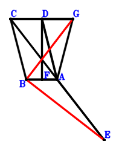
\(\because \) CBAD is a parallelogram \(\therefore \small\overrightarrow{AC}=\small\overrightarrow{AB} + \small\overrightarrow{AD}\).\(\because \) A is the midpoint of CE \(\therefore \small\overrightarrow{AE}=- \small\overrightarrow{AC}=- \small\overrightarrow{AB} - \small\overrightarrow{AD}\).\(\because \) F is the midpoint of BA \(\therefore \small\overrightarrow{AF}=\dfrac{\small\overrightarrow{AB}}{2}\).\(\because \) DG//FA and DG=2FA \(\therefore \small\overrightarrow{AG}=\small\overrightarrow{AD} - 2 \small\overrightarrow{AF}=- \small\overrightarrow{AB} + \small\overrightarrow{AD}\).\(\because \) DA=2BA \( \therefore4 \small\overrightarrow{AB}^{2} - \small\overrightarrow{AD}^{2}=0.\)In conclusion, \(\small\overrightarrow{BE} \cdot \small\overrightarrow{GB}=\left(- \small\overrightarrow{AB} + \small\overrightarrow{AE}\right) \cdot \left(\small\overrightarrow{AB} - \small\overrightarrow{AG}\right)=\left(- 2 \small\overrightarrow{AB} - \small\overrightarrow{AD}\right) \cdot \left(2 \small\overrightarrow{AB} - \small\overrightarrow{AD}\right)=- 4 \small\overrightarrow{AB}^{2} + \small\overrightarrow{AD}^{2}=0\), that is, GB⊥BE.
Exercise 1119： Let DGBA be a trapezoid with DA//GB and DA=2GB. C, E, F are collinear and 2CF=3EF. B, E, A are collinear and EA=2BE. C is the midpoint of DA. DA=2BA. Prove that GA⊥AF.
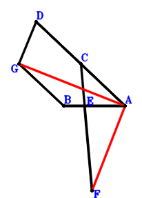
\(\because \) C is the midpoint of DA \(\therefore \small\overrightarrow{AC}=\dfrac{\small\overrightarrow{AD}}{2}\).\(\because \) B, E, A are collinear and EA=2BE \(\therefore \small\overrightarrow{AE}=\dfrac{2 \small\overrightarrow{AB}}{3}\).\(\because \) C, E, F are collinear and 2CF=3EF \(\therefore \small\overrightarrow{AF}=2 \small\overrightarrow{AB} - 2 \small\overrightarrow{AC}=2 \small\overrightarrow{AB} - \small\overrightarrow{AD}\).\(\because \) DA//GB and DA=2GB \(\therefore \small\overrightarrow{AG}=\small\overrightarrow{AB} + \dfrac{\small\overrightarrow{AD}}{2}\).\(\because \) DA=2BA \( \therefore4 \small\overrightarrow{AB}^{2} - \small\overrightarrow{AD}^{2}=0.\)In conclusion, \(- \small\overrightarrow{AF} \cdot \small\overrightarrow{AG}=- \left(\small\overrightarrow{AB} + \dfrac{\small\overrightarrow{AD}}{2}\right) \cdot \left(2 \small\overrightarrow{AB} - \small\overrightarrow{AD}\right)=- 2 \small\overrightarrow{AB}^{2} + \dfrac{\small\overrightarrow{AD}^{2}}{2}=0\), that is, GA⊥AF.
Exercise 1133： Let CBAE be a trapezoid with BA//CE and BA=2CE. DGBA is a trapezoid with DA//GB and DA=2GB. C, E are the midpoints of DA, BF, respectively. DA=2BA. Prove that GA⊥AF.
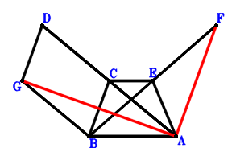
\(\because \) C is the midpoint of DA \(\therefore \small\overrightarrow{AC}=\dfrac{\small\overrightarrow{AD}}{2}\).\(\because \) BA//CE and BA=2CE \(\therefore \small\overrightarrow{AE}=- \dfrac{\small\overrightarrow{AB}}{2} + \dfrac{\small\overrightarrow{AD}}{2}\).\(\because \) E is the midpoint of BF \(\therefore \small\overrightarrow{AF}=- \small\overrightarrow{AB} + 2 \small\overrightarrow{AE}=- 2 \small\overrightarrow{AB} + \small\overrightarrow{AD}\).\(\because \) DA//GB and DA=2GB \(\therefore \small\overrightarrow{AG}=\small\overrightarrow{AB} + \dfrac{\small\overrightarrow{AD}}{2}\).\(\because \) DA=2BA \( \therefore4 \small\overrightarrow{AB}^{2} - \small\overrightarrow{AD}^{2}=0.\)In conclusion, \(\small\overrightarrow{AF} \cdot \small\overrightarrow{AG}=\left(- 2 \small\overrightarrow{AB} + \small\overrightarrow{AD}\right) \cdot \left(\small\overrightarrow{AB} + \dfrac{\small\overrightarrow{AD}}{2}\right)=- 2 \small\overrightarrow{AB}^{2} + \dfrac{\small\overrightarrow{AD}^{2}}{2}=0\), that is, GA⊥AF.
Exercise 1234： Let HBAG, GBAD and DBAC be parallelograms. E is the midpoint of FC and BA. DA=2BA. Prove that HA⊥AF.
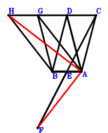
\(\because \) DBAC is a parallelogram \(\therefore \small\overrightarrow{AC}=- \small\overrightarrow{AB} + \small\overrightarrow{AD}\).\(\because \) E is the midpoint of BA \(\therefore \small\overrightarrow{AE}=\dfrac{\small\overrightarrow{AB}}{2}\).\(\because \) E is the midpoint of FC \(\therefore \small\overrightarrow{AF}=\small\overrightarrow{AB} - \small\overrightarrow{AC}=2 \small\overrightarrow{AB} - \small\overrightarrow{AD}\).\(\because \) GBAD is a parallelogram \(\therefore \small\overrightarrow{AG}=\small\overrightarrow{AB} + \small\overrightarrow{AD}\).\(\because \) HBAG is a parallelogram \(\therefore \small\overrightarrow{AH}=2 \small\overrightarrow{AB} + \small\overrightarrow{AD}\).\(\because \) DA=2BA \( \therefore4 \small\overrightarrow{AB}^{2} - \small\overrightarrow{AD}^{2}=0.\)In conclusion, \(- \small\overrightarrow{AF} \cdot \small\overrightarrow{AH}=- \left(2 \small\overrightarrow{AB} - \small\overrightarrow{AD}\right) \cdot \left(2 \small\overrightarrow{AB} + \small\overrightarrow{AD}\right)=- 4 \small\overrightarrow{AB}^{2} + \small\overrightarrow{AD}^{2}=0\), that is, HA⊥AF.
Exercise 1455： Let GBAD be a parallelogram. H, F are the midpoints of BG, EB, respectively. C is the midpoint of BA and ED. AD=2BA. Prove that FA⊥AH.
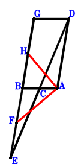
\(\because \) C is the midpoint of BA \(\therefore \small\overrightarrow{AC}=\dfrac{\small\overrightarrow{AB}}{2}\).\(\because \) C is the midpoint of ED \(\therefore \small\overrightarrow{AE}=2 \small\overrightarrow{AC} - \small\overrightarrow{AD}=\small\overrightarrow{AB} - \small\overrightarrow{AD}\).\(\because \) F is the midpoint of EB \(\therefore \small\overrightarrow{AF}=\dfrac{\small\overrightarrow{AB}}{2} + \dfrac{\small\overrightarrow{AE}}{2}=\small\overrightarrow{AB} - \dfrac{\small\overrightarrow{AD}}{2}\).\(\because \) GBAD is a parallelogram \(\therefore \small\overrightarrow{AG}=\small\overrightarrow{AB} + \small\overrightarrow{AD}\).\(\because \) H is the midpoint of BG \(\therefore \small\overrightarrow{AH}=\dfrac{\small\overrightarrow{AB}}{2} + \dfrac{\small\overrightarrow{AG}}{2}=\small\overrightarrow{AB} + \dfrac{\small\overrightarrow{AD}}{2}\).\(\because \) AD=2BA \( \therefore4 \small\overrightarrow{AB}^{2} - \small\overrightarrow{AD}^{2}=0.\)In conclusion, \(- \small\overrightarrow{AF} \cdot \small\overrightarrow{AH}=- \left(\small\overrightarrow{AB} - \dfrac{\small\overrightarrow{AD}}{2}\right) \cdot \left(\small\overrightarrow{AB} + \dfrac{\small\overrightarrow{AD}}{2}\right)=- \small\overrightarrow{AB}^{2} + \dfrac{\small\overrightarrow{AD}^{2}}{4}=0\), that is, FA⊥AH.
Exercise 1491： Let GBAH be a parallelogram. EBAC is a trapezoid with EB//CA and EB=2CA. C is the midpoint of DB. F is the midpoint of DA and BG. DA=2BA. Prove that EA⊥AH.
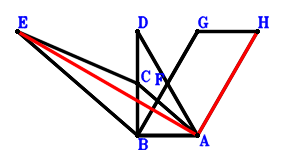
\(\because \) C is the midpoint of DB \(\therefore \small\overrightarrow{AC}=\dfrac{\small\overrightarrow{AB}}{2} + \dfrac{\small\overrightarrow{AD}}{2}\).\(\because \) EB//CA and EB=2CA \(\therefore \small\overrightarrow{AE}=\small\overrightarrow{AB} + 2 \small\overrightarrow{AC}=2 \small\overrightarrow{AB} + \small\overrightarrow{AD}\).\(\because \) F is the midpoint of DA \(\therefore \small\overrightarrow{AF}=\dfrac{\small\overrightarrow{AD}}{2}\).\(\because \) F is the midpoint of BG \(\therefore \small\overrightarrow{AG}=- \small\overrightarrow{AB} + 2 \small\overrightarrow{AF}=- \small\overrightarrow{AB} + \small\overrightarrow{AD}\).\(\because \) GBAH is a parallelogram \(\therefore \small\overrightarrow{AH}=- 2 \small\overrightarrow{AB} + \small\overrightarrow{AD}\).\(\because \) DA=2BA \( \therefore4 \small\overrightarrow{AB}^{2} - \small\overrightarrow{AD}^{2}=0.\)In conclusion, \(\small\overrightarrow{AE} \cdot \small\overrightarrow{AH}=\left(- 2 \small\overrightarrow{AB} + \small\overrightarrow{AD}\right) \cdot \left(2 \small\overrightarrow{AB} + \small\overrightarrow{AD}\right)=- 4 \small\overrightarrow{AB}^{2} + \small\overrightarrow{AD}^{2}=0\), that is, EA⊥AH.
Exercise 1515： Let DFBA be a trapezoid with DA//FB and DA=2FB. B, C, A are collinear and CA=2BC. D, C, E are collinear and DE=3CE. DA=2BA. Prove that FA⊥AE.
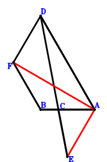
\(\because \) B, C, A are collinear and CA=2BC \(\therefore \small\overrightarrow{AC}=\dfrac{2 \small\overrightarrow{AB}}{3}\).\(\because \) D, C, E are collinear and DE=3CE \(\therefore \small\overrightarrow{AE}=\dfrac{3 \small\overrightarrow{AC}}{2} - \dfrac{\small\overrightarrow{AD}}{2}=\small\overrightarrow{AB} - \dfrac{\small\overrightarrow{AD}}{2}\).\(\because \) DA//FB and DA=2FB \(\therefore \small\overrightarrow{AF}=\small\overrightarrow{AB} + \dfrac{\small\overrightarrow{AD}}{2}\).\(\because \) DA=2BA \( \therefore4 \small\overrightarrow{AB}^{2} - \small\overrightarrow{AD}^{2}=0.\)In conclusion, \(- \small\overrightarrow{AE} \cdot \small\overrightarrow{AF}=- \left(\small\overrightarrow{AB} - \dfrac{\small\overrightarrow{AD}}{2}\right) \cdot \left(\small\overrightarrow{AB} + \dfrac{\small\overrightarrow{AD}}{2}\right)=- \small\overrightarrow{AB}^{2} + \dfrac{\small\overrightarrow{AD}^{2}}{4}=0\), that is, FA⊥AE.
Exercise 1541： Let DBFG be a parallelogram. B is the midpoint of EC. A is the midpoint of DC and BF. DA=2BA. Prove that EA⊥AG.
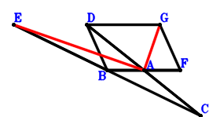
\(\because \) A is the midpoint of DC \(\therefore \small\overrightarrow{AC}=- \small\overrightarrow{AD}\).\(\because \) B is the midpoint of EC \(\therefore \small\overrightarrow{AE}=2 \small\overrightarrow{AB} - \small\overrightarrow{AC}=2 \small\overrightarrow{AB} + \small\overrightarrow{AD}\).\(\because \) A is the midpoint of BF \(\therefore \small\overrightarrow{AF}=- \small\overrightarrow{AB}\).\(\because \) DBFG is a parallelogram \(\therefore \small\overrightarrow{AG}=- 2 \small\overrightarrow{AB} + \small\overrightarrow{AD}\).\(\because \) DA=2BA \( \therefore4 \small\overrightarrow{AB}^{2} - \small\overrightarrow{AD}^{2}=0.\)In conclusion, \(\small\overrightarrow{AE} \cdot \small\overrightarrow{AG}=\left(- 2 \small\overrightarrow{AB} + \small\overrightarrow{AD}\right) \cdot \left(2 \small\overrightarrow{AB} + \small\overrightarrow{AD}\right)=- 4 \small\overrightarrow{AB}^{2} + \small\overrightarrow{AD}^{2}=0\), that is, EA⊥AG.
Exercise 1571： Let CBAD, DBAF and EBAC be parallelograms. G is the midpoint of FA and BH. DA=2BA. Prove that EA⊥AH.
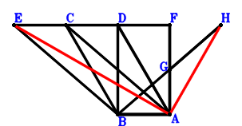
\(\because \) CBAD is a parallelogram \(\therefore \small\overrightarrow{AC}=\small\overrightarrow{AB} + \small\overrightarrow{AD}\).\(\because \) EBAC is a parallelogram \(\therefore \small\overrightarrow{AE}=2 \small\overrightarrow{AB} + \small\overrightarrow{AD}\).\(\because \) DBAF is a parallelogram \(\therefore \small\overrightarrow{AF}=- \small\overrightarrow{AB} + \small\overrightarrow{AD}\).\(\because \) G is the midpoint of FA \(\therefore \small\overrightarrow{AG}=\dfrac{\small\overrightarrow{AF}}{2}=- \dfrac{\small\overrightarrow{AB}}{2} + \dfrac{\small\overrightarrow{AD}}{2}\).\(\because \) G is the midpoint of BH \(\therefore \small\overrightarrow{AH}=- \small\overrightarrow{AB} + 2 \small\overrightarrow{AG}=- 2 \small\overrightarrow{AB} + \small\overrightarrow{AD}\).\(\because \) DA=2BA \( \therefore4 \small\overrightarrow{AB}^{2} - \small\overrightarrow{AD}^{2}=0.\)In conclusion, \(\small\overrightarrow{AE} \cdot \small\overrightarrow{AH}=\left(- 2 \small\overrightarrow{AB} + \small\overrightarrow{AD}\right) \cdot \left(2 \small\overrightarrow{AB} + \small\overrightarrow{AD}\right)=- 4 \small\overrightarrow{AB}^{2} + \small\overrightarrow{AD}^{2}=0\), that is, EA⊥AH.
Exercise 1591： Let GBAH, CBAD and EBAC be parallelograms. F is the midpoint of DA and BG. DA=2BA. Prove that EA⊥AH.
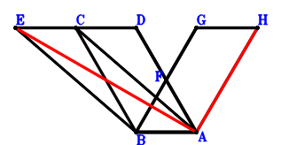
\(\because \) CBAD is a parallelogram \(\therefore \small\overrightarrow{AC}=\small\overrightarrow{AB} + \small\overrightarrow{AD}\).\(\because \) EBAC is a parallelogram \(\therefore \small\overrightarrow{AE}=2 \small\overrightarrow{AB} + \small\overrightarrow{AD}\).\(\because \) F is the midpoint of DA \(\therefore \small\overrightarrow{AF}=\dfrac{\small\overrightarrow{AD}}{2}\).\(\because \) F is the midpoint of BG \(\therefore \small\overrightarrow{AG}=- \small\overrightarrow{AB} + 2 \small\overrightarrow{AF}=- \small\overrightarrow{AB} + \small\overrightarrow{AD}\).\(\because \) GBAH is a parallelogram \(\therefore \small\overrightarrow{AH}=- 2 \small\overrightarrow{AB} + \small\overrightarrow{AD}\).\(\because \) DA=2BA \( \therefore4 \small\overrightarrow{AB}^{2} - \small\overrightarrow{AD}^{2}=0.\)In conclusion, \(\small\overrightarrow{AE} \cdot \small\overrightarrow{AH}=\left(- 2 \small\overrightarrow{AB} + \small\overrightarrow{AD}\right) \cdot \left(2 \small\overrightarrow{AB} + \small\overrightarrow{AD}\right)=- 4 \small\overrightarrow{AB}^{2} + \small\overrightarrow{AD}^{2}=0\), that is, EA⊥AH.
Exercise 1593： Let CBAD and EBAC be parallelograms. DBGF is a trapezoid with DB//FG and DB=2FG. F is the midpoint of BA. DA=2BA. Prove that EA⊥AG.
\(\because \) CBAD is a parallelogram \(\therefore \small\overrightarrow{AC}=\small\overrightarrow{AB} + \small\overrightarrow{AD}\).\(\because \) EBAC is a parallelogram \(\therefore \small\overrightarrow{AE}=2 \small\overrightarrow{AB} + \small\overrightarrow{AD}\).\(\because \) F is the midpoint of BA \(\therefore \small\overrightarrow{AF}=\dfrac{\small\overrightarrow{AB}}{2}\).\(\because \) DB//FG and DB=2FG \(\therefore \small\overrightarrow{AG}=\small\overrightarrow{AB} - \dfrac{\small\overrightarrow{AD}}{2}\).\(\because \) DA=2BA \( \therefore4 \small\overrightarrow{AB}^{2} - \small\overrightarrow{AD}^{2}=0.\)In conclusion, \(- \small\overrightarrow{AE} \cdot \small\overrightarrow{AG}=- \left(\small\overrightarrow{AB} - \dfrac{\small\overrightarrow{AD}}{2}\right) \cdot \left(2 \small\overrightarrow{AB} + \small\overrightarrow{AD}\right)=- 2 \small\overrightarrow{AB}^{2} + \dfrac{\small\overrightarrow{AD}^{2}}{2}=0\), that is, EA⊥AG.
Exercise 1595： Let DBFG, CBAD and EBAC be parallelograms. A is the midpoint of BF. DA=2BA. Prove that EA⊥AG.
\(\because \) CBAD is a parallelogram \(\therefore \small\overrightarrow{AC}=\small\overrightarrow{AB} + \small\overrightarrow{AD}\).\(\because \) EBAC is a parallelogram \(\therefore \small\overrightarrow{AE}=2 \small\overrightarrow{AB} + \small\overrightarrow{AD}\).\(\because \) A is the midpoint of BF \(\therefore \small\overrightarrow{AF}=- \small\overrightarrow{AB}\).\(\because \) DBFG is a parallelogram \(\therefore \small\overrightarrow{AG}=- 2 \small\overrightarrow{AB} + \small\overrightarrow{AD}\).\(\because \) DA=2BA \( \therefore4 \small\overrightarrow{AB}^{2} - \small\overrightarrow{AD}^{2}=0.\)In conclusion, \(\small\overrightarrow{AE} \cdot \small\overrightarrow{AG}=\left(- 2 \small\overrightarrow{AB} + \small\overrightarrow{AD}\right) \cdot \left(2 \small\overrightarrow{AB} + \small\overrightarrow{AD}\right)=- 4 \small\overrightarrow{AB}^{2} + \small\overrightarrow{AD}^{2}=0\), that is, EA⊥AG.
Exercise 1598： Let DAEC and DBAF be parallelograms. A is the midpoint of BC. AD=2BA. Prove that EB⊥BF.
\(\because \) A is the midpoint of BC \(\therefore \small\overrightarrow{AC}=- \small\overrightarrow{AB}\).\(\because \) DAEC is a parallelogram \(\therefore \small\overrightarrow{AE}=- \small\overrightarrow{AB} - \small\overrightarrow{AD}\).\(\because \) DBAF is a parallelogram \(\therefore \small\overrightarrow{AF}=- \small\overrightarrow{AB} + \small\overrightarrow{AD}\).\(\because \) AD=2BA \( \therefore4 \small\overrightarrow{AB}^{2} - \small\overrightarrow{AD}^{2}=0.\)In conclusion, \(\small\overrightarrow{BE} \cdot \small\overrightarrow{FB}=\left(- \small\overrightarrow{AB} + \small\overrightarrow{AE}\right) \cdot \left(\small\overrightarrow{AB} - \small\overrightarrow{AF}\right)=\left(- 2 \small\overrightarrow{AB} - \small\overrightarrow{AD}\right) \cdot \left(2 \small\overrightarrow{AB} - \small\overrightarrow{AD}\right)=- 4 \small\overrightarrow{AB}^{2} + \small\overrightarrow{AD}^{2}=0\), that is, EB⊥BF.
Exercise 1602： Let CBAD, DBFA and EBAC be parallelograms. G is the midpoint of BF. DA=2BA. Prove that EA⊥AG.
\(\because \) CBAD is a parallelogram \(\therefore \small\overrightarrow{AC}=\small\overrightarrow{AB} + \small\overrightarrow{AD}\).\(\because \) EBAC is a parallelogram \(\therefore \small\overrightarrow{AE}=2 \small\overrightarrow{AB} + \small\overrightarrow{AD}\).\(\because \) DBFA is a parallelogram \(\therefore \small\overrightarrow{AF}=\small\overrightarrow{AB} - \small\overrightarrow{AD}\).\(\because \) G is the midpoint of BF \(\therefore \small\overrightarrow{AG}=\dfrac{\small\overrightarrow{AB}}{2} + \dfrac{\small\overrightarrow{AF}}{2}=\small\overrightarrow{AB} - \dfrac{\small\overrightarrow{AD}}{2}\).\(\because \) DA=2BA \( \therefore4 \small\overrightarrow{AB}^{2} - \small\overrightarrow{AD}^{2}=0.\)In conclusion, \(- \small\overrightarrow{AE} \cdot \small\overrightarrow{AG}=- \left(\small\overrightarrow{AB} - \dfrac{\small\overrightarrow{AD}}{2}\right) \cdot \left(2 \small\overrightarrow{AB} + \small\overrightarrow{AD}\right)=- 2 \small\overrightarrow{AB}^{2} + \dfrac{\small\overrightarrow{AD}^{2}}{2}=0\), that is, EA⊥AG.
Exercise 1606： Let EBAF be a parallelogram. DGBA is a trapezoid with DA//GB and DA=2GB. C is the midpoint of BE and DA. DA=2BA. Prove that GA⊥AF.
\(\because \) C is the midpoint of DA \(\therefore \small\overrightarrow{AC}=\dfrac{\small\overrightarrow{AD}}{2}\).\(\because \) C is the midpoint of BE \(\therefore \small\overrightarrow{AE}=- \small\overrightarrow{AB} + 2 \small\overrightarrow{AC}=- \small\overrightarrow{AB} + \small\overrightarrow{AD}\).\(\because \) EBAF is a parallelogram \(\therefore \small\overrightarrow{AF}=- 2 \small\overrightarrow{AB} + \small\overrightarrow{AD}\).\(\because \) DA//GB and DA=2GB \(\therefore \small\overrightarrow{AG}=\small\overrightarrow{AB} + \dfrac{\small\overrightarrow{AD}}{2}\).\(\because \) DA=2BA \( \therefore4 \small\overrightarrow{AB}^{2} - \small\overrightarrow{AD}^{2}=0.\)In conclusion, \(\small\overrightarrow{AF} \cdot \small\overrightarrow{AG}=\left(- 2 \small\overrightarrow{AB} + \small\overrightarrow{AD}\right) \cdot \left(\small\overrightarrow{AB} + \dfrac{\small\overrightarrow{AD}}{2}\right)=- 2 \small\overrightarrow{AB}^{2} + \dfrac{\small\overrightarrow{AD}^{2}}{2}=0\), that is, GA⊥AF.
Exercise 1607： Let FBAE be a parallelogram. DBAG is a trapezoid with DB//GA and DB=2GA. G is the midpoint of BH. C is the midpoint of EA and DB. DA=2BA. Prove that FA⊥AH.
\(\because \) C is the midpoint of DB \(\therefore \small\overrightarrow{AC}=\dfrac{\small\overrightarrow{AB}}{2} + \dfrac{\small\overrightarrow{AD}}{2}\).\(\because \) C is the midpoint of EA \(\therefore \small\overrightarrow{AE}=2 \small\overrightarrow{AC}=\small\overrightarrow{AB} + \small\overrightarrow{AD}\).\(\because \) FBAE is a parallelogram \(\therefore \small\overrightarrow{AF}=2 \small\overrightarrow{AB} + \small\overrightarrow{AD}\).\(\because \) DB//GA and DB=2GA \(\therefore \small\overrightarrow{AG}=- \dfrac{\small\overrightarrow{AB}}{2} + \dfrac{\small\overrightarrow{AD}}{2}\).\(\because \) G is the midpoint of BH \(\therefore \small\overrightarrow{AH}=- \small\overrightarrow{AB} + 2 \small\overrightarrow{AG}=- 2 \small\overrightarrow{AB} + \small\overrightarrow{AD}\).\(\because \) DA=2BA \( \therefore4 \small\overrightarrow{AB}^{2} - \small\overrightarrow{AD}^{2}=0.\)In conclusion, \(\small\overrightarrow{AF} \cdot \small\overrightarrow{AH}=\left(- 2 \small\overrightarrow{AB} + \small\overrightarrow{AD}\right) \cdot \left(2 \small\overrightarrow{AB} + \small\overrightarrow{AD}\right)=- 4 \small\overrightarrow{AB}^{2} + \small\overrightarrow{AD}^{2}=0\), that is, FA⊥AH.
Exercise 1609： Let FBAE be a parallelogram. G is the midpoint of BH and DA. C is the midpoint of EA and DB. I is the midpoint of BJ and HA. DA=2BA. Prove that FA⊥AJ.
\(\because \) C is the midpoint of DB \(\therefore \small\overrightarrow{AC}=\dfrac{\small\overrightarrow{AB}}{2} + \dfrac{\small\overrightarrow{AD}}{2}\).\(\because \) C is the midpoint of EA \(\therefore \small\overrightarrow{AE}=2 \small\overrightarrow{AC}=\small\overrightarrow{AB} + \small\overrightarrow{AD}\).\(\because \) FBAE is a parallelogram \(\therefore \small\overrightarrow{AF}=2 \small\overrightarrow{AB} + \small\overrightarrow{AD}\).\(\because \) G is the midpoint of DA \(\therefore \small\overrightarrow{AG}=\dfrac{\small\overrightarrow{AD}}{2}\).\(\because \) G is the midpoint of BH \(\therefore \small\overrightarrow{AH}=- \small\overrightarrow{AB} + 2 \small\overrightarrow{AG}=- \small\overrightarrow{AB} + \small\overrightarrow{AD}\).\(\because \) I is the midpoint of HA \(\therefore \small\overrightarrow{AI}=\dfrac{\small\overrightarrow{AH}}{2}=- \dfrac{\small\overrightarrow{AB}}{2} + \dfrac{\small\overrightarrow{AD}}{2}\).\(\because \) I is the midpoint of BJ \(\therefore \small\overrightarrow{AJ}=- \small\overrightarrow{AB} + 2 \small\overrightarrow{AI}=- 2 \small\overrightarrow{AB} + \small\overrightarrow{AD}\).\(\because \) DA=2BA \( \therefore4 \small\overrightarrow{AB}^{2} - \small\overrightarrow{AD}^{2}=0.\)In conclusion, \(\small\overrightarrow{AF} \cdot \small\overrightarrow{AJ}=\left(- 2 \small\overrightarrow{AB} + \small\overrightarrow{AD}\right) \cdot \left(2 \small\overrightarrow{AB} + \small\overrightarrow{AD}\right)=- 4 \small\overrightarrow{AB}^{2} + \small\overrightarrow{AD}^{2}=0\), that is, FA⊥AJ.
Exercise 1619： Let FBAE be a parallelogram. GBAH is a trapezoid with BA//GH and BA=2GH. G, H are the midpoints of DA, BI, respectively. C is the midpoint of EA and DB. DA=2BA. Prove that FA⊥AI.
\(\because \) C is the midpoint of DB \(\therefore \small\overrightarrow{AC}=\dfrac{\small\overrightarrow{AB}}{2} + \dfrac{\small\overrightarrow{AD}}{2}\).\(\because \) C is the midpoint of EA \(\therefore \small\overrightarrow{AE}=2 \small\overrightarrow{AC}=\small\overrightarrow{AB} + \small\overrightarrow{AD}\).\(\because \) FBAE is a parallelogram \(\therefore \small\overrightarrow{AF}=2 \small\overrightarrow{AB} + \small\overrightarrow{AD}\).\(\because \) G is the midpoint of DA \(\therefore \small\overrightarrow{AG}=\dfrac{\small\overrightarrow{AD}}{2}\).\(\because \) BA//GH and BA=2GH \(\therefore \small\overrightarrow{AH}=- \dfrac{\small\overrightarrow{AB}}{2} + \dfrac{\small\overrightarrow{AD}}{2}\).\(\because \) H is the midpoint of BI \(\therefore \small\overrightarrow{AI}=- \small\overrightarrow{AB} + 2 \small\overrightarrow{AH}=- 2 \small\overrightarrow{AB} + \small\overrightarrow{AD}\).\(\because \) DA=2BA \( \therefore4 \small\overrightarrow{AB}^{2} - \small\overrightarrow{AD}^{2}=0.\)In conclusion, \(\small\overrightarrow{AF} \cdot \small\overrightarrow{AI}=\left(- 2 \small\overrightarrow{AB} + \small\overrightarrow{AD}\right) \cdot \left(2 \small\overrightarrow{AB} + \small\overrightarrow{AD}\right)=- 4 \small\overrightarrow{AB}^{2} + \small\overrightarrow{AD}^{2}=0\), that is, FA⊥AI.
Exercise 1620： Let GBAH, DBAG and FBAE be parallelograms. C is the midpoint of EA and DB. DA=2BA. Prove that FA⊥AH.
\(\because \) C is the midpoint of DB \(\therefore \small\overrightarrow{AC}=\dfrac{\small\overrightarrow{AB}}{2} + \dfrac{\small\overrightarrow{AD}}{2}\).\(\because \) C is the midpoint of EA \(\therefore \small\overrightarrow{AE}=2 \small\overrightarrow{AC}=\small\overrightarrow{AB} + \small\overrightarrow{AD}\).\(\because \) FBAE is a parallelogram \(\therefore \small\overrightarrow{AF}=2 \small\overrightarrow{AB} + \small\overrightarrow{AD}\).\(\because \) DBAG is a parallelogram \(\therefore \small\overrightarrow{AG}=- \small\overrightarrow{AB} + \small\overrightarrow{AD}\).\(\because \) GBAH is a parallelogram \(\therefore \small\overrightarrow{AH}=- 2 \small\overrightarrow{AB} + \small\overrightarrow{AD}\).\(\because \) DA=2BA \( \therefore4 \small\overrightarrow{AB}^{2} - \small\overrightarrow{AD}^{2}=0.\)In conclusion, \(\small\overrightarrow{AF} \cdot \small\overrightarrow{AH}=\left(- 2 \small\overrightarrow{AB} + \small\overrightarrow{AD}\right) \cdot \left(2 \small\overrightarrow{AB} + \small\overrightarrow{AD}\right)=- 4 \small\overrightarrow{AB}^{2} + \small\overrightarrow{AD}^{2}=0\), that is, FA⊥AH.
Exercise 1628： Let GBAD and EBAF be parallelograms. H is the midpoint of GB. C is the midpoint of BE and DA. DA=2BA. Prove that HA⊥AF.
\(\because \) C is the midpoint of DA \(\therefore \small\overrightarrow{AC}=\dfrac{\small\overrightarrow{AD}}{2}\).\(\because \) C is the midpoint of BE \(\therefore \small\overrightarrow{AE}=- \small\overrightarrow{AB} + 2 \small\overrightarrow{AC}=- \small\overrightarrow{AB} + \small\overrightarrow{AD}\).\(\because \) EBAF is a parallelogram \(\therefore \small\overrightarrow{AF}=- 2 \small\overrightarrow{AB} + \small\overrightarrow{AD}\).\(\because \) GBAD is a parallelogram \(\therefore \small\overrightarrow{AG}=\small\overrightarrow{AB} + \small\overrightarrow{AD}\).\(\because \) H is the midpoint of GB \(\therefore \small\overrightarrow{AH}=\dfrac{\small\overrightarrow{AB}}{2} + \dfrac{\small\overrightarrow{AG}}{2}=\small\overrightarrow{AB} + \dfrac{\small\overrightarrow{AD}}{2}\).\(\because \) DA=2BA \( \therefore4 \small\overrightarrow{AB}^{2} - \small\overrightarrow{AD}^{2}=0.\)In conclusion, \(\small\overrightarrow{AF} \cdot \small\overrightarrow{AH}=\left(- 2 \small\overrightarrow{AB} + \small\overrightarrow{AD}\right) \cdot \left(\small\overrightarrow{AB} + \dfrac{\small\overrightarrow{AD}}{2}\right)=- 2 \small\overrightarrow{AB}^{2} + \dfrac{\small\overrightarrow{AD}^{2}}{2}=0\), that is, HA⊥AF.
Exercise 1631： Let DFBA be a trapezoid with DA//FB and DA=2FB. ECBA is a trapezoid with AE//BC and AE=2BC. C is the midpoint of DA. DA=2BA. Prove that FA⊥AE.
\(\because \) C is the midpoint of DA \(\therefore \small\overrightarrow{AC}=\dfrac{\small\overrightarrow{AD}}{2}\).\(\because \) AE//BC and AE=2BC \(\therefore \small\overrightarrow{AE}=- 2 \small\overrightarrow{AB} + 2 \small\overrightarrow{AC}=- 2 \small\overrightarrow{AB} + \small\overrightarrow{AD}\).\(\because \) DA//FB and DA=2FB \(\therefore \small\overrightarrow{AF}=\small\overrightarrow{AB} + \dfrac{\small\overrightarrow{AD}}{2}\).\(\because \) DA=2BA \( \therefore4 \small\overrightarrow{AB}^{2} - \small\overrightarrow{AD}^{2}=0.\)In conclusion, \(\small\overrightarrow{AE} \cdot \small\overrightarrow{AF}=\left(- 2 \small\overrightarrow{AB} + \small\overrightarrow{AD}\right) \cdot \left(\small\overrightarrow{AB} + \dfrac{\small\overrightarrow{AD}}{2}\right)=- 2 \small\overrightarrow{AB}^{2} + \dfrac{\small\overrightarrow{AD}^{2}}{2}=0\), that is, FA⊥AE.
Exercise 1633： Let EBAC be a trapezoid with EB//CA and EB=2CA. DBAF is a trapezoid with DB//FA and DB=2FA. F, C are the midpoints of BG, DB, respectively. DA=2BA. Prove that EA⊥AG.
\(\because \) C is the midpoint of DB \(\therefore \small\overrightarrow{AC}=\dfrac{\small\overrightarrow{AB}}{2} + \dfrac{\small\overrightarrow{AD}}{2}\).\(\because \) EB//CA and EB=2CA \(\therefore \small\overrightarrow{AE}=\small\overrightarrow{AB} + 2 \small\overrightarrow{AC}=2 \small\overrightarrow{AB} + \small\overrightarrow{AD}\).\(\because \) DB//FA and DB=2FA \(\therefore \small\overrightarrow{AF}=- \dfrac{\small\overrightarrow{AB}}{2} + \dfrac{\small\overrightarrow{AD}}{2}\).\(\because \) F is the midpoint of BG \(\therefore \small\overrightarrow{AG}=- \small\overrightarrow{AB} + 2 \small\overrightarrow{AF}=- 2 \small\overrightarrow{AB} + \small\overrightarrow{AD}\).\(\because \) DA=2BA \( \therefore4 \small\overrightarrow{AB}^{2} - \small\overrightarrow{AD}^{2}=0.\)In conclusion, \(\small\overrightarrow{AE} \cdot \small\overrightarrow{AG}=\left(- 2 \small\overrightarrow{AB} + \small\overrightarrow{AD}\right) \cdot \left(2 \small\overrightarrow{AB} + \small\overrightarrow{AD}\right)=- 4 \small\overrightarrow{AB}^{2} + \small\overrightarrow{AD}^{2}=0\), that is, EA⊥AG.
Exercise 1647： Let DBAF and FBAG be parallelograms. EBAC is a trapezoid with EB//CA and EB=2CA. C is the midpoint of DB. DA=2BA. Prove that EA⊥AG.
\(\because \) C is the midpoint of DB \(\therefore \small\overrightarrow{AC}=\dfrac{\small\overrightarrow{AB}}{2} + \dfrac{\small\overrightarrow{AD}}{2}\).\(\because \) EB//CA and EB=2CA \(\therefore \small\overrightarrow{AE}=\small\overrightarrow{AB} + 2 \small\overrightarrow{AC}=2 \small\overrightarrow{AB} + \small\overrightarrow{AD}\).\(\because \) DBAF is a parallelogram \(\therefore \small\overrightarrow{AF}=- \small\overrightarrow{AB} + \small\overrightarrow{AD}\).\(\because \) FBAG is a parallelogram \(\therefore \small\overrightarrow{AG}=- 2 \small\overrightarrow{AB} + \small\overrightarrow{AD}\).\(\because \) DA=2BA \( \therefore4 \small\overrightarrow{AB}^{2} - \small\overrightarrow{AD}^{2}=0.\)In conclusion, \(\small\overrightarrow{AE} \cdot \small\overrightarrow{AG}=\left(- 2 \small\overrightarrow{AB} + \small\overrightarrow{AD}\right) \cdot \left(2 \small\overrightarrow{AB} + \small\overrightarrow{AD}\right)=- 4 \small\overrightarrow{AB}^{2} + \small\overrightarrow{AD}^{2}=0\), that is, EA⊥AG.
Exercise 1648： Let DBFG be a parallelogram. EBAC is a trapezoid with EB//CA and EB=2CA. A, C are the midpoints of BF, DB, respectively. DA=2BA. Prove that EA⊥AG.
\(\because \) C is the midpoint of DB \(\therefore \small\overrightarrow{AC}=\dfrac{\small\overrightarrow{AB}}{2} + \dfrac{\small\overrightarrow{AD}}{2}\).\(\because \) EB//CA and EB=2CA \(\therefore \small\overrightarrow{AE}=\small\overrightarrow{AB} + 2 \small\overrightarrow{AC}=2 \small\overrightarrow{AB} + \small\overrightarrow{AD}\).\(\because \) A is the midpoint of BF \(\therefore \small\overrightarrow{AF}=- \small\overrightarrow{AB}\).\(\because \) DBFG is a parallelogram \(\therefore \small\overrightarrow{AG}=- 2 \small\overrightarrow{AB} + \small\overrightarrow{AD}\).\(\because \) DA=2BA \( \therefore4 \small\overrightarrow{AB}^{2} - \small\overrightarrow{AD}^{2}=0.\)In conclusion, \(\small\overrightarrow{AE} \cdot \small\overrightarrow{AG}=\left(- 2 \small\overrightarrow{AB} + \small\overrightarrow{AD}\right) \cdot \left(2 \small\overrightarrow{AB} + \small\overrightarrow{AD}\right)=- 4 \small\overrightarrow{AB}^{2} + \small\overrightarrow{AD}^{2}=0\), that is, EA⊥AG.
Exercise 1650： Let DBFA be a parallelogram. EBAC is a trapezoid with EB//CA and EB=2CA. C, G are the midpoints of DB, BF, respectively. DA=2BA. Prove that EA⊥AG.
\(\because \) C is the midpoint of DB \(\therefore \small\overrightarrow{AC}=\dfrac{\small\overrightarrow{AB}}{2} + \dfrac{\small\overrightarrow{AD}}{2}\).\(\because \) EB//CA and EB=2CA \(\therefore \small\overrightarrow{AE}=\small\overrightarrow{AB} + 2 \small\overrightarrow{AC}=2 \small\overrightarrow{AB} + \small\overrightarrow{AD}\).\(\because \) DBFA is a parallelogram \(\therefore \small\overrightarrow{AF}=\small\overrightarrow{AB} - \small\overrightarrow{AD}\).\(\because \) G is the midpoint of BF \(\therefore \small\overrightarrow{AG}=\dfrac{\small\overrightarrow{AB}}{2} + \dfrac{\small\overrightarrow{AF}}{2}=\small\overrightarrow{AB} - \dfrac{\small\overrightarrow{AD}}{2}\).\(\because \) DA=2BA \( \therefore4 \small\overrightarrow{AB}^{2} - \small\overrightarrow{AD}^{2}=0.\)In conclusion, \(- \small\overrightarrow{AE} \cdot \small\overrightarrow{AG}=- \left(\small\overrightarrow{AB} - \dfrac{\small\overrightarrow{AD}}{2}\right) \cdot \left(2 \small\overrightarrow{AB} + \small\overrightarrow{AD}\right)=- 2 \small\overrightarrow{AB}^{2} + \dfrac{\small\overrightarrow{AD}^{2}}{2}=0\), that is, EA⊥AG.
Exercise 1697： Let FBAG, DBAF and ECAD be parallelograms. B is the midpoint of CA. AD=2BA. Prove that EA⊥AG.
\(\because \) B is the midpoint of CA \(\therefore \small\overrightarrow{AC}=2 \small\overrightarrow{AB}\).\(\because \) ECAD is a parallelogram \(\therefore \small\overrightarrow{AE}=2 \small\overrightarrow{AB} + \small\overrightarrow{AD}\).\(\because \) DBAF is a parallelogram \(\therefore \small\overrightarrow{AF}=- \small\overrightarrow{AB} + \small\overrightarrow{AD}\).\(\because \) FBAG is a parallelogram \(\therefore \small\overrightarrow{AG}=- 2 \small\overrightarrow{AB} + \small\overrightarrow{AD}\).\(\because \) AD=2BA \( \therefore4 \small\overrightarrow{AB}^{2} - \small\overrightarrow{AD}^{2}=0.\)In conclusion, \(\small\overrightarrow{AE} \cdot \small\overrightarrow{AG}=\left(- 2 \small\overrightarrow{AB} + \small\overrightarrow{AD}\right) \cdot \left(2 \small\overrightarrow{AB} + \small\overrightarrow{AD}\right)=- 4 \small\overrightarrow{AB}^{2} + \small\overrightarrow{AD}^{2}=0\), that is, EA⊥AG.
Exercise 1734： Let CBAD and DAFG be parallelograms. A is the midpoint of CE and BF. DA=2BA. Prove that GB⊥BE.
\(\because \) CBAD is a parallelogram \(\therefore \small\overrightarrow{AC}=\small\overrightarrow{AB} + \small\overrightarrow{AD}\).\(\because \) A is the midpoint of CE \(\therefore \small\overrightarrow{AE}=- \small\overrightarrow{AC}=- \small\overrightarrow{AB} - \small\overrightarrow{AD}\).\(\because \) A is the midpoint of BF \(\therefore \small\overrightarrow{AF}=- \small\overrightarrow{AB}\).\(\because \) DAFG is a parallelogram \(\therefore \small\overrightarrow{AG}=- \small\overrightarrow{AB} + \small\overrightarrow{AD}\).\(\because \) DA=2BA \( \therefore4 \small\overrightarrow{AB}^{2} - \small\overrightarrow{AD}^{2}=0.\)In conclusion, \(\small\overrightarrow{BE} \cdot \small\overrightarrow{GB}=\left(- \small\overrightarrow{AB} + \small\overrightarrow{AE}\right) \cdot \left(\small\overrightarrow{AB} - \small\overrightarrow{AG}\right)=\left(- 2 \small\overrightarrow{AB} - \small\overrightarrow{AD}\right) \cdot \left(2 \small\overrightarrow{AB} - \small\overrightarrow{AD}\right)=- 4 \small\overrightarrow{AB}^{2} + \small\overrightarrow{AD}^{2}=0\), that is, GB⊥BE.
Exercise 1735： Let DBCA be a parallelogram. DFBA is a trapezoid with DA//FB and DA=2FB. E is the midpoint of BC. DA=2BA. Prove that FA⊥AE.
\(\because \) DBCA is a parallelogram \(\therefore \small\overrightarrow{AC}=\small\overrightarrow{AB} - \small\overrightarrow{AD}\).\(\because \) E is the midpoint of BC \(\therefore \small\overrightarrow{AE}=\dfrac{\small\overrightarrow{AB}}{2} + \dfrac{\small\overrightarrow{AC}}{2}=\small\overrightarrow{AB} - \dfrac{\small\overrightarrow{AD}}{2}\).\(\because \) DA//FB and DA=2FB \(\therefore \small\overrightarrow{AF}=\small\overrightarrow{AB} + \dfrac{\small\overrightarrow{AD}}{2}\).\(\because \) DA=2BA \( \therefore4 \small\overrightarrow{AB}^{2} - \small\overrightarrow{AD}^{2}=0.\)In conclusion, \(- \small\overrightarrow{AE} \cdot \small\overrightarrow{AF}=- \left(\small\overrightarrow{AB} - \dfrac{\small\overrightarrow{AD}}{2}\right) \cdot \left(\small\overrightarrow{AB} + \dfrac{\small\overrightarrow{AD}}{2}\right)=- \small\overrightarrow{AB}^{2} + \dfrac{\small\overrightarrow{AD}^{2}}{4}=0\), that is, FA⊥AE.
Exercise 1759： Let DBAC be a trapezoid with DC//BA and DC=2BA. D, E, B are collinear and DE=2EB. DA=2BA. Prove that EA⊥AC.
\(\because \) DC//BA and DC=2BA \(\therefore \small\overrightarrow{AC}=- 2 \small\overrightarrow{AB} + \small\overrightarrow{AD}\).\(\because \) D, E, B are collinear and DE=2EB \(\therefore \small\overrightarrow{AE}=\dfrac{2 \small\overrightarrow{AB}}{3} + \dfrac{\small\overrightarrow{AD}}{3}\).\(\because \) DA=2BA \( \therefore4 \small\overrightarrow{AB}^{2} - \small\overrightarrow{AD}^{2}=0.\)In conclusion, \(\small\overrightarrow{AC} \cdot \small\overrightarrow{AE}=\left(- 2 \small\overrightarrow{AB} + \small\overrightarrow{AD}\right) \cdot \left(\dfrac{2 \small\overrightarrow{AB}}{3} + \dfrac{\small\overrightarrow{AD}}{3}\right)=- \dfrac{4 \small\overrightarrow{AB}^{2}}{3} + \dfrac{\small\overrightarrow{AD}^{2}}{3}=0\), that is, EA⊥AC.
Exercise 1762： Let DBCA be a parallelogram. B, F, D are collinear and FD=2BF. E is the midpoint of BC. DA=2BA. Prove that FA⊥AE.
\(\because \) DBCA is a parallelogram \(\therefore \small\overrightarrow{AC}=\small\overrightarrow{AB} - \small\overrightarrow{AD}\).\(\because \) E is the midpoint of BC \(\therefore \small\overrightarrow{AE}=\dfrac{\small\overrightarrow{AB}}{2} + \dfrac{\small\overrightarrow{AC}}{2}=\small\overrightarrow{AB} - \dfrac{\small\overrightarrow{AD}}{2}\).\(\because \) B, F, D are collinear and FD=2BF \(\therefore \small\overrightarrow{AF}=\dfrac{2 \small\overrightarrow{AB}}{3} + \dfrac{\small\overrightarrow{AD}}{3}\).\(\because \) DA=2BA \( \therefore4 \small\overrightarrow{AB}^{2} - \small\overrightarrow{AD}^{2}=0.\)In conclusion, \(- \small\overrightarrow{AE} \cdot \small\overrightarrow{AF}=- \left(\dfrac{2 \small\overrightarrow{AB}}{3} + \dfrac{\small\overrightarrow{AD}}{3}\right) \cdot \left(\small\overrightarrow{AB} - \dfrac{\small\overrightarrow{AD}}{2}\right)=- \dfrac{2 \small\overrightarrow{AB}^{2}}{3} + \dfrac{\small\overrightarrow{AD}^{2}}{6}=0\), that is, FA⊥AE.
Exercise 1776： Let DBAC be a parallelogram. D, A, E are collinear and DE=3AE. DA=2BA. Prove that EB⊥BC.
\(\because \) DBAC is a parallelogram \(\therefore \small\overrightarrow{AC}=- \small\overrightarrow{AB} + \small\overrightarrow{AD}\).\(\because \) D, A, E are collinear and DE=3AE \(\therefore \small\overrightarrow{AE}=- \dfrac{\small\overrightarrow{AD}}{2}\).\(\because \) DA=2BA \( \therefore4 \small\overrightarrow{AB}^{2} - \small\overrightarrow{AD}^{2}=0.\)In conclusion, \(\small\overrightarrow{BE} \cdot \small\overrightarrow{CB}=\left(- \small\overrightarrow{AB} + \small\overrightarrow{AE}\right) \cdot \left(\small\overrightarrow{AB} - \small\overrightarrow{AC}\right)=\left(- \small\overrightarrow{AB} - \dfrac{\small\overrightarrow{AD}}{2}\right) \cdot \left(2 \small\overrightarrow{AB} - \small\overrightarrow{AD}\right)=- 2 \small\overrightarrow{AB}^{2} + \dfrac{\small\overrightarrow{AD}^{2}}{2}=0\), that is, EB⊥BC.